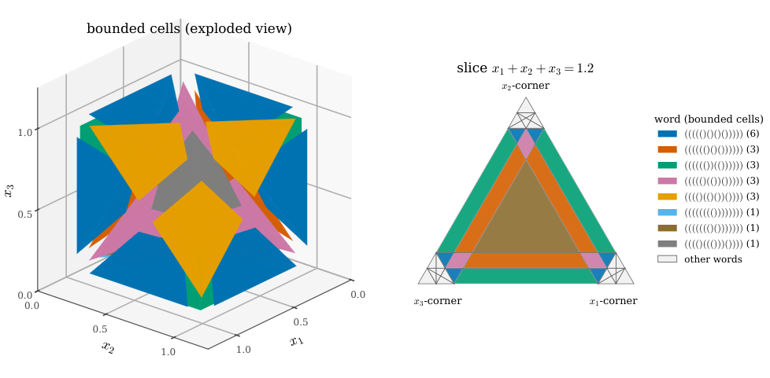
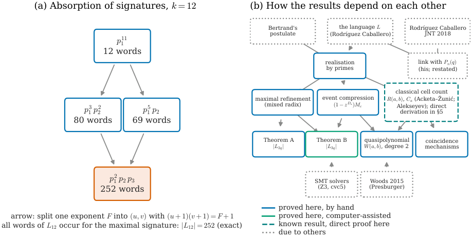
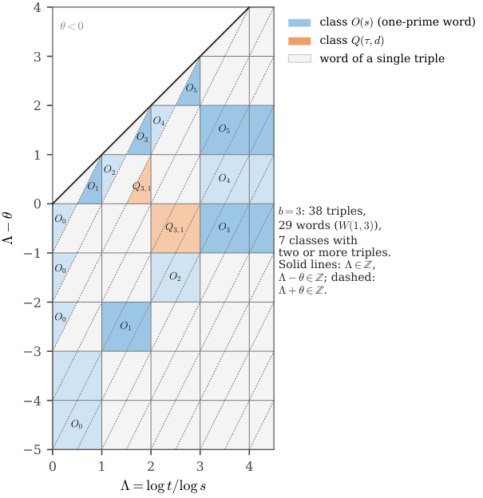

How Many Dyck Words Do the Divisors of an Integer Make? Exact Counts and Quasipolynomial Growth
At a glance
What the paper contributes
The language $L$ of the words $\langle\!\langle n\rangle\!\rangle_2$ and the question of describing it are Rodríguez Caballero's. Starting from the reduction to the odd part, the paper counts the words of each semilength:
- Part I (structure). The words of a pattern are the words of the cells of a hyperplane arrangement in the logarithms of the primes, and every cell is realised by primes (Lemma 2.3). $L_k$ is produced by the single finest pattern $p_1^{q_1-1}\cdots p_r^{q_r-1}$, $k=q_1\cdots q_r$ (Theorem 3.1), so membership in $L$ is decidable (Corollary 4.2). Written proofs.
- Part II (general enumeration). The number $R(a,b)$ of cells of the pattern $p^ap'^b$ is a known count: $R(a,b)=(N(2b,2a)+4a+4b+6)/8$, with $N$ Alekseyev's number of two-dimensional threshold functions on a grid (Proposition 5.3; Acketa–Žunić, Alekseyev); the paper gives a direct proof, with leading coefficient $C_a\sim12a^2/\pi^2$ (Theorem 5.1, Corollary 5.2); $W(a,b)$ is eventually a quasipolynomial in $b$ of degree exactly two (Theorem 6.1, an application of Woods' theorem, existence only; Theorem 6.3, Corollary 6.4); three mechanisms by which distinct cells give the same word (Section 7). Written proofs.
- Part III (explicit counts). $|L_{2q}|=(9q^2-10q+13)/4$ for odd primes $q$ (Theorem A, written proof) and $|L_{3q}|=(44q^2-69q+58-3(\tfrac q3))/6$ for primes $q\ge5$ (Theorem B: one lemma is decided by exact SMT queries with Z3, without a checked proof object); a table of $|L_k|$ for small $k$ by exact enumeration.
The paper claims no novelty for the Kassel–Reutenauer reformulation of the appendix, which is implicit in Rodríguez Caballero's work (JNT 2018). The arrangements and their link with semiorders go back to Stanley; counting cells through vertices is the planar case of Zaslavsky's face-count formula; the quasipolynomiality rests on a theorem of Woods.
🚀 Start here: Lemma 2.1: reduction to the odd part: Dₙ∖2Dₙ = Dₘ, 2Dₙ∖Dₙ = tDₘ, semilength τ(m).
Main results:
- Theorem 3.1: maximal refinement: Lₖ is the set of words of the finest pattern (q₁−1, …, qᵣ−1)
- Proposition 5.3: the cells are threshold functions: R(a,b) = (N(2b,2a) + 4a + 4b + 6)/8 (Alekseyev), so R(a,b) = R(b,a)
- Theorem 6.1: for fixed a, W(a,b) is eventually a quasipolynomial in b of degree ≤ 2 (via Woods)
- Theorem 8.12: Theorem A: W(1,b) = ⌊(9b²+8b+12)/4⌋, so |L₂q| = (9q²−10q+13)/4
- Theorem 9.4: Theorem B: W(2,b) = (44b²+19b+e_(b mod 6))/6, so |L₃q| = (44q²−69q+58−3(q/3))/6
🗺️ Map of the results (click a box to go to it)
Dependencies in the written proof: an arrow A → B means that this proof of B uses A. Every result rests on its written proof; the tags record what was checked besides, and each statement's “Evidence & scope” block says how far. The colour of a box is its strongest tag, in the order above; the tags in the box give the rest. Boxes with a thick border are the main results; click a box to read the statement.
📐 Setting (copied from the paper: §1, §2, the introduction of Part II, §5 and §6)
Let \(D_n\) be the set of divisors of \(n\) and \(2D_n=\{ 2d: d\in D_n\} \). Write the elements of the symmetric difference \(D_n\triangle 2D_n\) in increasing order and replace each element by \({\mathtt{(}}\) if it lies in \(D_n\setminus 2D_n\) and by \({\mathtt{)}}\) if it lies in \(2D_n\setminus D_n\); the result is \(\langle \! \langle n\rangle \! \rangle _2\). (§1)
For \(k\ge 1\) let \(L_k\) be the set of words of \(L\) of semilength \(k\) (length \(2k\)), where \(L=\{ \langle \! \langle n\rangle \! \rangle _2:n\ge 1\} \). (§1, Definition 1.1)
Let \(m=p_1^{f_1}\cdots p_r^{f_r}\), where the \(p_i\) are distinct odd primes and the exponents \(f_i\ge 1\). The multiset \(\{ f_1,\dots ,f_r\} \) is the pattern (signature) of \(m\), and \(\tau (m)=\prod (f_i+1)\). Put
Then \(u_a(x)=\log d/\log t\) for \(d=\prod p_i^{a_i}\), and \(d{\lt}td'\) if and only if \(u_a(x){\lt}1+u_{a'}(x)\). Let \(\mathcal A_f\) be the finite set of hyperplanes \(\{ x:\alpha \cdot x=1\} \) with \(\alpha \in \prod _i\{ -f_i,\dots ,f_i\} \), \(\alpha \neq 0\). (§2, with \(n=2^{e-1}m\), \(m\) odd, and \(t=2^e\) of Lemma 2.1)
For integers \(a,b\ge 1\), \(W(a,b)\) is the number of distinct words \(\langle \! \langle n\rangle \! \rangle _2\) with \(n=2^{e-1}r^as^b\), where \(r\ne s\) are odd primes and \(e\ge 1\). We measure in units of \(\log s\), with \(\Lambda =\log t/\log s\) and \(\theta =\log r/\log s\), and write \(\operatorname {clip}(v)=\min (b,\max (-b-1,v))\) and \(f(v)=\min (b+1,\max (0,v+1))\). (Introduction of Part II)
Let \(\mathcal L_{a,b}\) be the set of lines \(\ell _{h,\rho }:\Lambda +h\theta =\rho \) with \(|h|\le a\) and \(\rho \in \mathbb Z\cap [-b,b]\), and let \(R(a,b)\) be the number of cells (connected components) of the open quadrant \(\mathcal Q=\{ \Lambda {\gt}0,\theta {\gt}0\} \) minus these lines. (§5)
Put
(§6, Step 1)
1 Introduction
For \(k\ge 1\) let \(L_k\) be the set of words of \(L\) of semilength \(k\) (length \(2k\)).
↳ Not used by another result of the paper.
🖼️ Figure 1

The word of \(n=2^3\cdot 5\cdot 7^3\). Left: the divisors of the odd part \(m=5\cdot 7^3\) as the grid of exponents \(\{ 0,1\} \times \{ 0,\dots ,3\} \). Right: each divisor \(d\) projected to \(\log d/\log t\) (blue) and joined to its partner \(\log (td)/\log t\) (orange), one unit to the right (\(t=16\)). Reading the line from left to right gives \(\langle \! \langle n\rangle \! \rangle _2\); its Dyck path is drawn below.
2 Reduction to an arrangement of hyperplanes
Write \(n=2^{e-1}m\) with \(m\) odd, \(e\ge 1\), and put \(t=2^e\). Then \(D_n\setminus 2D_n=D_m\) and \(2D_n\setminus D_n=tD_m\). Hence \(\langle \! \langle n\rangle \! \rangle _2\) is obtained by merging \(D_m\) (letters \({\mathtt{(}}\)) with \(tD_m\) (letters \({\mathtt{)}}\)), and its semilength is \(\tau (m)\).
Isabelle · oursshow
reduction_lemma · Isabelle/CaballeroDyckWords/Caballero_Divisor_Words.thy, line 183
theorem reduction_lemma:
assumes "odd m" "e \<ge> 1" "n = 2 ^ (e - 1) * m"
shows "divs n - (*) 2 ` divs n = divs m"
and "(*) 2 ` divs n - divs n = (*) (2 ^ e) ` divs m"dword_counts_and_dyck · Isabelle/CaballeroDyckWords/Caballero_Divisor_Words.thy, line 194
theorem dword_counts_and_dyck:
assumes "odd m" "e \<ge> 1" "n = 2 ^ (e - 1) * m"
shows "length (filter id (dword n)) = card (divs m)"
and "length (filter Not (dword n)) = card (divs m)"
and "\<And>k. length (filter Not (take k (dword n))) \<le> length (filter id (take k (dword n)))"🆕 Classical and new: elementary and not new: implicit in Rodríguez Caballero's 2020 construction from the divisors of 2n (FOM, 17 March 2020); the identity in this form was noted in the public discussion that led to this note.
↳ Used in: 2.2, Lemma 2.3, Theorem 3.1, Lemma 8.1, A.1
\(D_n=\{ 2^ad: 0\le a\le e-1,\ d\mid m\} \) and \(2D_n=\{ 2^ad:1\le a\le e,\ d\mid m\} \). The two sets share the elements with \(1\le a\le e-1\), so the difference \(D_n\setminus 2D_n\) consists of the elements with \(a=0\) and \(2D_n\setminus D_n\) of those with \(a=e\).
💡 In plain words (commentary, not part of the paper)
Only the odd part of \(n\) and the power of two matter, and in a simple way. If \(n=2^{e-1}m\) with \(m\) odd, the letters \({\mathtt{(}}\) of the word are the divisors of \(m\) and the letters \({\mathtt{)}}\) are those divisors multiplied by \(t=2^e\); all the other divisors of \(n\) cancel against their doubles. So the word has \(\tau (m)\) letters of each kind, and it is obtained by merging the two sorted lists \(D_m\) and \(tD_m\). For \(n=13720=2^3\cdot 5\cdot 7^3\) (Figure 1), \(t=16\) and \(m=5\cdot 7^3\) has \(8\) divisors, so the word has semilength \(8\).
The paper attributes the reduction to Rodríguez Caballero, who pointed it out in the discussion that led to the note; the paper includes the short proof.
🛡️ Evidence & scope
Audit: machine-checked in Isabelle/HOL session Caballero_Base, theory Caballero_Divisor_Words (task 290): reduction_lemma proves D_n ∖ 2D_n = D_m and 2D_n ∖ D_n = 2^e D_m; dword_counts_and_dyck proves that the word has τ(m) letters of each kind and is a Dyck word (every prefix). Compiles without sorry (Isabelle2026); negative controls (2^(e+1) in place of 2^e, a shifted count) fail. working script Caballero_Divisor_Words.thy, not published
Program: n = 1 … 3000: the word rebuilt from the counts C(n) of (1) equals the word read from the definition; with t = 2^(e−1) (wrong reduction) the cell vector of n = 13720 fails. lab/comprueba_lab.py
🧪 Lab: Figure 1 live: the word of n from its divisors, its Dyck path and its cell
For the \(n\) you choose (\(n\le 10^{12}\)) the lab factors \(n=2^{e-1}m\) with \(m\) odd, reads \(\langle \! \langle n\rangle \! \rangle _2\) from the definition (\(D_n\triangle 2D_n\) in increasing order), rebuilds it from the counts \(C(n)\) of (1) and checks that both agree, that the word is Dyck and symmetric. The first plot is the line of Figure 1: each divisor \(d\) of \(m\) at \(\log d/\log t\) and its partner \(td\) one unit to the right. For one odd prime it gives \(N\) with word \(O_q(N)\) (Corollary 3.3(a)); for two it computes the clipped vector \(c_h=\mathrm{clip}\lfloor \Lambda +h\theta \rfloor \) of the cell exactly (integer comparisons \(s^\rho {\lt}t\, r^h\)), checks \(Z(c)=C(n)\) and draws the point \((\Lambda ,\theta )\) among the lines \(\Lambda +h\theta =\rho \). The first figure is in 3D (drag to turn it): for three odd primes, the planes \(\alpha \cdot x=1\) (\(|\alpha _i|\le f_i\); only \(\alpha \in \{ -1,0,1\} ^3\) when there are more than 60) in coordinates \(x_i=\log p_i/\log t\), as in the paper’s figure of the pattern \((1,1,1)\), with the point of \(n\) as a star; for two, the lines \(\Lambda +h\theta =\rho \) at height \(0\) under a terrace whose height at \((\Lambda ,\theta )\) is the height of the Dyck word of that cell (sampled in floating point, colour by word; the point of \(n\) uses its exact cell); for one, the words \(O_q(N)\), \(N=0,\dots ,q-1\), as Dyck paths side by side, the one of \(n\) in red; otherwise each letter at \(\log v/\log t\), by type, at the height of the path. Next to each 3D figure is its 2D view: the slice \(x_1+x_2+x_3=S\) through the point of \(n\) (three primes), the cells seen from above (two primes; its slider sweeps \(\theta \) along the line \(\Lambda =\Lambda (n)\) and shows the word it meets), the paths on top of each other (one prime), or the path against \(\log v/\log t\). Floating point only places things in the drawings.
Let \(\mathcal A_f\) be the finite set of hyperplanes \(\{ x:\alpha \cdot x=1\} \) with \(\alpha \in \prod _i\{ -f_i,\dots ,f_i\} \), \(\alpha \neq 0\). For \(x\in {\mathbb {R}}^r_{{\gt}0}\setminus \bigcup \mathcal A_f\) let \(w_f(x)\) be the word whose letters \({\mathtt{)}}\) are preceded by
letters \({\mathtt{(}}\), sorted increasingly. Explicitly, if \(c_{(1)}\le \dots \le c_{(K)}\) is the sorted list, then \(w_f(x)={\mathtt{(}}^{c_{(1)}}{\mathtt{)}}\, {\mathtt{(}}^{c_{(2)}-c_{(1)}}{\mathtt{)}}\cdots {\mathtt{(}}^{c_{(K)}-c_{(K-1)}}{\mathtt{)}}\).
↳ Used in: 11.8
Let \(x^0\in {\mathbb {R}}^r_{{\gt}0}\setminus \bigcup \mathcal A_f\). There are \(e\ge 1\) and distinct odd primes \(p_1,\dots ,p_r\) such that \(n=2^{e-1}p_1^{f_1}\cdots p_r^{f_r}\) satisfies \(\langle \! \langle n\rangle \! \rangle _2=w_f(x^0)\).
Trust base: ⚠️ not checked. Written proof (audited); not machine-checked. The Isabelle session of task 291 leaves the realisation by Bertrand’s postulate out (its phase 2)
Proof: in this note·Formalized: Isabelle/HOL, by the author (public formalizations repository)·Covers: the whole statement
🆕 Classical and new: the paper: arrangements of this kind and their link with semiorders go back to Stanley; the proof uses Bertrand’s postulate.
↳ Used in: Theorem 3.1, Corollary 3.3, Corollary 4.2, Theorem 6.1, Theorem 6.3, Lemma 7.1, Lemma 8.2, Lemma 9.1, 11.8
Let \(U\) be the cell containing \(x^0\). It is open and \(w_f\) is constant on it. Points with pairwise distinct coordinates are dense, so pick one, \(x^1\in U\). Then pick \(\delta {\gt}0\) such that the box \(B=\prod _i(x^1_i-\delta ,x^1_i+\delta )\) lies in \(U\), \(x^1_i-\delta {\gt}0\) for every \(i\), and the \(r\) intervals \((x^1_i-\delta ,x^1_i+\delta )\) are pairwise disjoint. We use Bertrand’s postulate in the form: for every real \(y\ge 1\) there is a prime \(p\) with \(y{\lt}p\le 2y\) [ 2 ] . Choose \(e\) so large that, for each \(i\),
has left end \(y_i\ge 2\) and ratio \(2^{2e\delta }{\gt}2\). Then \((y_i,2y_i]\subset J_i\) contains a prime \(p_i{\gt}2\). The \(J_i\) are pairwise disjoint, so the \(p_i\) are distinct. Moreover \(\log p_i/\log 2^e\in (x^1_i-\delta ,x^1_i+\delta )\), so \(x(n)\in B\subset U\) and \(\langle \! \langle n\rangle \! \rangle _2=w_f(x(n))=w_f(x^0)\).
🛡️ Evidence & scope
Program: Figure 3: for all 18 098 points with r, s ≤ 200 and e ≤ 11 in the window, the word of n = 2^(e−1) r s² is the word of its cell (the figure script stops if a value disagrees); in the figure every one of the 19 cells of the window [0,3]² contains one of the 3590 points with r, s ≤ 100, e ≤ 8. working script fig_primos_a1.py, not published
🖼️ Figure 2

The arrangement \(\mathcal A_{(1,1,1)}\) (pattern \(pp'p''\), \(k=8\)) of the \(19\) planes \(\alpha \cdot x=1\), \(\alpha \in \{ -1,0,1\} ^3\), that meet the positive octant. Left: its \(21\) bounded cells, each shrunk towards its centre so that all are visible, coloured by word (\(8\) words; the number of cells of each word is in the legend). Permuting the primes does not change the word, and the multiplicities \(6\), \(3\), \(1\) are consistent with orbits under permutation of the coordinates. Right: the slice \(x_1+x_2+x_3=1.2\), cut exactly by the planes (\(43\) pieces, \(11\) words); pieces of the eight words on the left keep their colours.
🖼️ Figure 3
![Pattern \((1,2)\) (\(m=rs^2\), \(k=6\)): the cells of the lines \(\alpha x+\beta y=1\), \(|\alpha |\le 1\), \(|\beta |\le 2\), in the window \([0,3]^2\), coloured by word (\(19\) cells, \(16\) words; cells of equal colour have the same word), and the points \((\log r,\log s)/\log 2^e\) for distinct…](images/img-0003.png)
Pattern \((1,2)\) (\(m=rs^2\), \(k=6\)): the cells of the lines \(\alpha x+\beta y=1\), \(|\alpha |\le 1\), \(|\beta |\le 2\), in the window \([0,3]^2\), coloured by word (\(19\) cells, \(16\) words; cells of equal colour have the same word), and the points \((\log r,\log s)/\log 2^e\) for distinct primes \(3\le r,s\le 100\) and \(e\le 8\) (\(3590\) points). Every one of the \(19\) cells in the window contains such a point.
3 Maximal refinement
Let \(k\ge 2\) with prime factorisation \(k=q_1q_2\cdots q_r\), repetitions allowed. Then \(L_k\) is the set of words \(\langle \! \langle n\rangle \! \rangle _2\) whose odd part has pattern \((q_1-1,\dots ,q_r-1)\):
Equivalently, every word of every pattern \(f\) with \(\prod (f_i+1)=k\) is also a word of the finest pattern \((q_1-1,\dots ,q_r-1)\).
Isabelle · ours · partshow
Only a part is in Isabelle: the combinatorial core: the word is unchanged when x₁ is split into (x₁, (u+1)x₁); the realisation by primes (Lemma 2.3) is not formalized
word_refinement · Isabelle/CaballeroDyckWords/Caballero_Radix/Caballero_Radix.thy, line 257
theorem word_refinement: assumes "finite R" shows "wordF (idxS u v R) (posS x u \<rho>) = wordF (idxF ((u + 1) * (v + 1) - 1) R) (posF x \<rho>)"
comparison_transfer · Isabelle/CaballeroDyckWords/Caballero_Radix/Caballero_Radix.thy, line 239
theorem comparison_transfer: assumes "t \<in> idxS u v R" "t' \<in> idxS u v R" shows "posS x u \<rho> t < 1 + posS x u \<rho> t' \<longleftrightarrow> posF x \<rho> (phi u t) < 1 + posF x \<rho> (phi u t')"
no_unit_difference_transfer · Isabelle/CaballeroDyckWords/Caballero_Radix/Caballero_Radix.thy, line 244
theorem no_unit_difference_transfer:
assumes "\<And>a b. a \<in> idxF ((u + 1) * (v + 1) - 1) R \<Longrightarrow> b \<in> idxF ((u + 1) * (v + 1) - 1) R \<Longrightarrow>
posF x \<rho> a - posF x \<rho> b \<noteq> 1"
and "a \<in> idxS u v R" "b \<in> idxS u v R"
shows "posS x u \<rho> a - posS x u \<rho> b \<noteq> 1"Trust base: ⚠️ not checked. Written proof, audited internally; the combinatorial core (the word is unchanged when x₁ is split into (x₁, (u+1)x₁)) compiles in Isabelle/HOL (session Caballero_Radix, public); the realisation step (Lemma 2.3) is not formalized
🆕 Classical and new: the paper counts it among its new results («The novelty claim is limited to the counts, to Theorem 3.1 and its consequence Corollary 4.2, …»); the mixed-radix decomposition is classical.
↳ Used in: Corollary 3.3, Corollary 4.2, 4.3, 11.6
The words of the finest pattern lie in \(L_k\) by definition. For the converse it is enough to show: if \(f=(f_1,\dots ,f_s)\) has \(f_1+1=(u+1)(v+1)\) with \(u,v\ge 1\), and \(f'=(u,v,f_2,\dots ,f_s)\), then every word of pattern \(f\) is a word of pattern \(f'\). Repeating this step splits every composite \(f_i+1\) into primes. The step terminates because each application increases the number of parts.
Let \(\langle \! \langle n\rangle \! \rangle _2\) have pattern \(f\), and let \(x=x(n)\in {\mathbb {R}}^s_{{\gt}0}\), so \(x\) lies on no hyperplane of \(\mathcal A_f\) and \(\langle \! \langle n\rangle \! \rangle _2=w_f(x)\). Define \(y=(x_1,(u+1)x_1,x_2,\dots ,x_s)\in {\mathbb {R}}^{s+1}_{{\gt}0}\) and \(\varphi :I_{f'}\to I_f\), \(\varphi (i,j,a_2,\dots ,a_s)=(i+(u+1)j,a_2,\dots ,a_s)\). By Lemma 3.2, \(\varphi \) is a bijection and \(u_{a'}(y)=u_{\varphi (a')}(x)\) for all \(a'\in I_{f'}\).
Now \(y\) lies on no hyperplane of \(\mathcal A_{f'}\). Indeed, \(u_{a'}(y)-u_{b'}(y)=1\) would give \(u_{\varphi (a')}(x)-u_{\varphi (b')}(x)=1\), which is impossible. Moreover \(c'_{b'}(y)=\# \{ a':u_{a'}(y){\lt}1+u_{b'}(y)\} =c_{\varphi (b')}(x)\), so the two sorted multisets coincide and \(w_{f'}(y)=w_f(x)=\langle \! \langle n\rangle \! \rangle _2\). The point \(y\) is degenerate, since its second coordinate is exactly \(u+1\) times its first and no pair of primes has that property. But Lemma 2.3 only needs \(y\) to avoid \(\mathcal A_{f'}\). It supplies \(n'\) with odd part of pattern \(f'\) and \(\langle \! \langle n'\rangle \! \rangle _2=w_{f'}(y)=\langle \! \langle n\rangle \! \rangle _2\).
💡 In plain words (commentary, not part of the paper)
Many integers have odd parts with \(k\) divisors: for \(k=12\) the odd part can be \(p^{11}\), \(p^5p'\), \(p^3p'^2\) or \(p^2p'p''\). The theorem says that only the last kind matters: every word of semilength \(k\) is already the word of some \(n\) whose odd part has the finest pattern, one prime for each prime factor of \(k\) (counted with multiplicity). So \(|L_{12}|\) is the number of words of the pattern \(p^2p'p''\), \(252\) by exact enumeration (Figure 4(a)).
Why it is true: in logarithmic units the divisors of \(p^F\), \(F+1=(u+1)(v+1)\), sit at \(Nx_1\), \(0\le N\le F\); by division with remainder these are the points \(ix_1+j(u+1)x_1\), so the point \((x_1,(u+1)x_1)\) of the finer pattern makes exactly the same comparisons \(d{\lt}td'\) and gives the same word. That point is not given by two primes, but it lies off every hyperplane, so it sits in an open cell, and Lemma 2.3 (Bertrand’s postulate) finds primes in that cell.
The paper counts this theorem among its new results; the mixed-radix decomposition it uses is classical (Lemma 3.2).
🛡️ Evidence & scope
Audit: machine-checked in Isabelle/HOL session Caballero_Radix (task 291): word_refinement (the word w_f of the comparisons u_a < 1 + u_b is the same for the pattern (u, v, …) at (x₁, (u+1)x₁, …) as for (F, …) at (x₁, …), for every number of further primes), with comparison_transfer and no_unit_difference_transfer. Compiles without sorry; out of scope: the realisation by primes. working script Caballero_Radix.thy, not published
Program: k ≤ 18: the number of words of the finest pattern equals |L_k| over all patterns (exact enumeration with SageMath polyhedra over ℚ, e.g. k = 12: 12, 69, 80, 252 for p¹¹, p⁵p′, p³p′², p²p′p″), and the one-prime words lie inside the two-prime words for k = pq ≤ 49. working scripts formas_exactas.sage, tabla_pq.py, not published
Let \(u,v\ge 1\) and \(F=(u+1)(v+1)-1\). Every integer \(N\in \{ 0,\dots ,F\} \) can be written in exactly one way as \(N=i+(u+1)j\) with \(0\le i\le u\), \(0\le j\le v\). Hence, for every real \(x_1\), \(\{ Nx_1:0\le N\le F\} =\{ ix_1+j(u+1)x_1: 0\le i\le u,\ 0\le j\le v\} \), and the map \((i,j)\mapsto i+(u+1)j\) is a bijection between the index sets.
Isabelle · oursshow
radix_bij · Isabelle/CaballeroDyckWords/Caballero_Radix/Caballero_Radix.thy, line 74
theorem radix_bij:
"bij_betw (radix u) ({0..u} \<times> {0..v}) {0..(u + 1) * (v + 1) - 1}"🆕 Classical and new: the paper: «mixed radix; classical».
↳ Used in: Theorem 3.1
Division with remainder by \(u+1\); \(j=\lfloor N/(u+1)\rfloor \le v\).
🛡️ Evidence & scope
Audit: machine-checked in Isabelle/HOL session Caballero_Radix (task 291): radix_bij proves the bijection (i, j) ↦ i + (u+1)j from 0..u×0..v onto 0..(u+1)(v+1)−1. Compiles without sorry; the control with factor u+2 fails. working script Caballero_Radix.thy, not published
\(L_1=\{ {\mathtt{(}}{\mathtt{)}}\} \). For \(q\) prime, \(L_q=\{ O_q(N): 0\le N\le q-1\} \) with \(O_q(N)\) the word whose \(j\)-th letter \({\mathtt{)}}\) is preceded by \(\min (q,N+j)\) letters \({\mathtt{(}}\) (\(j=1,\dots ,q\)). Hence \(|L_q|=q\).
For primes \(p\le q\), \(L_{pq}\) is the set of words of pattern \((p-1,q-1)\). So \(|L_{pq}|=W(p-1,q-1)\), where \(W(a,b)\) denotes the number of words of pattern \((a,b)\).
↳ Used in: Theorem 8.12, Theorem 9.4
(b) is Theorem 3.1. For (a), let \(m=p^{q-1}\) and \(\Lambda =\log t/\log p\notin {\mathbb {Z}}\). In units of \(\log p\), the letters \({\mathtt{(}}\) sit at \(0,\dots ,q-1\) and the letters \({\mathtt{)}}\) at \(\Lambda +0,\dots ,\Lambda +q-1\). The \(j\)-th \({\mathtt{)}}\) (at \(\Lambda +j-1\), \(j\ge 1\)) is preceded by \(\# \{ i\le q-1: i{\lt}\Lambda +j-1\} =\min (q,\lfloor \Lambda \rfloor +j)\) letters \({\mathtt{(}}\), so the word is \(O_q(\min (\lfloor \Lambda \rfloor ,q-1))\). The words \(O_q(N)\), \(0\le N\le q-1\), are pairwise distinct: the first \({\mathtt{)}}\) is preceded by \(N+1\) letters \({\mathtt{(}}\). Each is realised, by Lemma 2.3 applied to \(x^0=1/(N+\tfrac 12)\).
🛡️ Evidence & scope
Program: the lab «Figure 1 live» computes N and checks O_q(N) against the word of n for one-prime odd parts (JavaScript, BigInt; equal to the Python version on 32 values of n, labjs/control_js_python.js). labjs/nucleo.js, lab/dyck_divisors_lab.py
🖼️ Figure 4

(a) Maximal refinement for \(k=12\): each arrow splits one exponent \(F\) into \((u,v)\) with \((u+1)(v+1)=F+1\), and every word of the coarser pattern is a word of the finer one. The counts \(12\), \(69\), \(80\) and \(252\) of words of the patterns \(p^{11}\), \(p^5p'\), \(p^3p'^2\) and \(p^2p'p''\) are exact enumerations (SageMath over \(\mathbb Q\)), so \(|L_{12}|=252\). (b) How the results depend on each other. Boxes in dotted grey are due to others (Bertrand’s postulate, the language \(L\) and the link with \(P_n(q)\) of Rodríguez Caballero, Woods’ theorem) or are external tools (the SMT solvers). The dashed teal box is a known result with a direct proof here (the cell count of Section 5, classical: Acketa–Žunić, Alekseyev). The colour of the frame of the other boxes gives the status of our results (proved by hand, or computer-assisted).
4 Decidability and complexity
Let \(\mathcal A\) be an arrangement of hyperplanes \(\alpha \cdot x=1\) in the positive orthant of \(\mathbb R^r\), with \(\alpha \in {\mathbb {Z}}^r\) and \(|\alpha _i|\le M\) (\(M\ge 1\)). Every open cell of \(\mathcal A\) contains a point with \(0{\lt}x_i{\lt}r!\, M^{r-1}+1\) for all \(i\).
Trust base: ⚠️ not checked. Written proof; not machine-checked. Table 1, which this bound makes exact, is an exact enumeration in rational arithmetic (SageMath polyhedra over ℚ for three or more primes, exact fractions for two), not a formula
Proof: in this note·Formalized: Isabelle/HOL, by the author (public formalizations repository)·Covers: the whole statement
↳ Used in: Corollary 4.2, 10.1
The closure \(P\) of a cell \(U\) is a full-dimensional polyhedron in the closed orthant, hence pointed; let \(v\) be a vertex. At \(v\) there are \(r\) linearly independent active constraints \(Av=d\), each a hyperplane \(\alpha \cdot x=1\) or a face \(x_i=0\). So \(A\) is an integer matrix with entries of absolute value at most \(M\), and \(d\in \{ 0,1\} ^r\). By Cramer’s rule \(v_i=\det A_i/\det A\) with \(|\det A|\ge 1\), and expanding \(\det A_i\) along the column \(d\) gives \(|\det A_i|\le r!\, M^{r-1}\). Points of \(U\) arbitrarily close to \(v\) satisfy the bound.
🛡️ Evidence & scope
By hand: the bound for the four maximal patterns of Table 1, (1,1,1), (2,1,1), (1,1,1,1), (2,2,1): 7, 25, 25, 25, all below the box x_i ≤ 50 of the enumerations (paper, last section of Part III)
Program: Table 1 (exact enumeration): k = 4, 6, 8, 9, 10: 6, 16, 40, 28, 47 and k = 12: 252, 16: 1083 (patterns 15; 7,1; 3,3; 3,1,1; 1,1,1,1: 16, 127, 95, 682, 1083), 18: 1222 (17; 8,1; 5,2; 2,2,1: 18, 163, 200, 1222), SageMath polyhedra over ℚ in the box x_i ≤ 50. working script formas_exactas.sage, not published
Program: Table 1 (exact enumeration): two primes by exact fractions: k = 4: 6, 6: 16, 9: 28, 10: 47, 14: 96, 15: 136, 21: 288, 25: 255, 35: 971, 49: 1083. working script tabla_pq.py, not published
Program: Table 1 (exact enumeration): the lab recount: |L_4|, |L_6|, |L_9|, |L_10|, |L_14|, |L_15|, |L_21|, |L_25|, |L_35| = 6, 16, 28, 47, 96, 136, 288, 255, 971. lab/comprueba_lab.py
Membership in \(L\) is decidable. The empty word is not in \(L\), and \(L_1=\{ \mathtt{()}\} \). Given a balanced word \(w\) of semilength \(k\ge 2\), let \(k=q_1\cdots q_r\). Then \(w\in L\) if and only if \(w\) is the word of some cell of the arrangement of the pattern \((q_1-1,\dots ,q_r-1)\), and these finitely many cells can be listed exactly.
Trust base: ⚠️ not checked. Written proof (audited); not machine-checked
Proof: in this note·Covers: not formalized
🆕 Classical and new: the paper: it answers algorithmically the decision problem posed by Rodríguez Caballero in 2020 (FOM), not his question about first-order Peano arithmetic.
By Theorem 3.1, \(L_k\) is the set of words of the cells of \(\mathcal A_{(q_1-1,\dots ,q_r-1)}\), and every cell is realised (Lemma 2.3). The arrangement is finite. Each sign vector of the hyperplanes and of the coordinate faces defines a strict rational linear system, whose feasibility is decided exactly, and a feasible system yields a rational point and hence the word of its cell. The search can be confined to the box of Proposition 4.1.
Let \(k=q_1\cdots q_r\), so \(r\le \log _2k\). The maximal pattern has \(f_i=q_i-1\), and its arrangement has at most \(H=\prod _i(2q_i-1)-1\le k^{\log _23}\) hyperplanes, since \(2q-1\le q^{\log _23}\) for \(q\ge 2\). An arrangement of \(H\) hyperplanes in \(\mathbb R^r\) has at most \(\sum _{j\le r}\binom Hj\le (H+1)^r\) cells, and they can be listed incrementally with one rational linear program per candidate. So membership is decided in time \(\exp \bigl(O((\log k)^2)\bigr)\), and in time polynomial in \(k\) when the number \(r\) of prime factors of \(k\) (with multiplicity) is bounded. Whether a uniformly polynomial algorithm exists is Question 11.7.
↳ Not used by another result of the paper.
5 The number of cells
For \(a,b\ge 1\),
where
The maximum in \(B_q\) is never \(0\), since \(h/q\) and \(h/q+1\) are integers that do not both vanish; \(B_q=0\) for \(q{\gt}a\).
Trust base: ⚠️ not checked. Written proof, audited internally 25-nov (adversarial audit: survives); not machine-checked; the formula is checked against an exact independent cell enumeration
Proof: in this note·Covers: not formalized
🆕 Classical and new: known result, direct proof here (version 2): by Proposition 5.3, R(a,b) = (N(2b,2a) + 4a + 4b + 6)/8, where N is Alekseyev’s exact count of two-dimensional threshold functions on a grid (SIAM J. Discrete Math. 24 (2010), Theorem 3); the linear partitions of the grid go back to Acketa–Žunić (1991). Version 1 presented the formula as new; the paper now claims only the direct proof in its coordinates.
↳ Used in: Corollary 5.2, Proposition 5.3, Lemma 9.2
Exchanging the names of the summation variables, \(\sum _{q=1}^{2a}(2a+1-q)S_q(b)=\sum (2a+1-q)(2b+1-p)\) over the coprime pairs \(1\le p\le 2b\), \(1\le q\le 2a\), which is \(V(2b,2a)\). For the boundary terms, the second form of \(B_q\) gives
because \((q,k,p)\mapsto (kq,kp)\) is a bijection onto \(\{ 1,\dots ,a\} \times \{ 1,\dots ,b\} \), with inverse \((x,y)\mapsto (x/g,g,y/g)\), \(g=\gcd (x,y)\). Theorem 5.1 then reads \(R(a,b)=1+(3a+1)b+a+\frac12V(2b,2a)-ab=1+a+b+2ab+\frac12V(2b,2a)\). Since \((4b+1)(4a+1)+1+4a+4b+6=8(1+a+b+2ab)\), this is \((N(2b,2a)+4a+4b+6)/8\). The symmetry follows from \(V(m,n)=V(n,m)\).
💡 In plain words (commentary, not part of the paper)
For two primes, \(n=2^{e-1}r^as^b\), the word depends only on where the point \((\Lambda ,\theta )=(\log t,\log r)/\log s\) lies with respect to the lines \(\Lambda +h\theta =\rho \), \(|h|\le a\), \(|\rho |\le b\). The theorem counts the pieces (cells) into which these lines cut the quadrant: an exact formula, valid for all \(a,b\ge 1\). For \(a=1\) it gives \((5b+4)(b+1)/2\), and for \((a,b)=(3,3)\) it gives \(191\) cells, of which only \(95\) carry different words (Section 2).
Why it is true: adding the lines one at a time, each new line raises the number of cells by one plus the number of points where it meets earlier lines (Euler’s relation). Every crossing has \(\theta =p/q\) with \(q\le 2a\), and the lines through one crossing form an arithmetic progression of slopes without gaps; counting the pairs \((h,h+q)\) and halving with an involution produces the Euler-function sums \(S_q\) and the correction \(B_q\).
The count itself is classical (version 2 of the paper): by Proposition 5.3, \(R(a,b)=(N(2b,2a)+4a+4b+6)/8\), where \(N\) is Alekseyev’s exact count of two-dimensional threshold functions on a grid, and the linear partitions of the grid go back to Acketa and Žunić. What the theorem adds is a direct proof in the coordinates of the paper. Counting cells through vertices is the planar case of Zaslavsky’s face-count formula. The formula counts cells, not words: \(W(a,b)\le R(a,b)\), with equality failing exactly where cells coincide (Section 7).
🛡️ Evidence & scope
Program: block T1: direct exact vertex count (fractions) for a ≤ 5, b ≤ 9 (number of lines, no gaps in the progressions, N_q = (T_q − B_q)/2, Euler = formula), and the formula = an independent exact enumeration in 56 cases up to a = 6, b = 4; controls (without B_q, without ½, Euler with m_v, all lines) fail. working scripts teoria_general.py, independiente.py, not published
Program: the formula against R(1,b), R(2,b) (Lemmas 8.3, 9.2) for b < 40 and the exact row a = 3 for b ≤ 110. working script formula_R_v369.py, not published
Program: the lab’s exact recount = formula for a ≤ 4 (a = 1: b ≤ 20, a = 2: b ≤ 14, a = 3: b ≤ 9, a = 4: b ≤ 7); 191 cells for (3,3), 38 for (1,3); control without B_q fails. lab/comprueba_lab.py
🧪 Lab: Figure 7 live: cells R(a,b) by the formula and by an exact recount, words W(a,b), and W/R
For the exponent \(a\) you choose and \(b=1,\dots ,b_{\max }\) the lab recounts the cells of the lines \(\Lambda +h\theta =\rho \) (\(|h|\le a\), \(|\rho |\le b\)) in the open quadrant exactly: between consecutive critical slopes \(\theta =p/q\) (\(p\le 2b\), \(q\le 2a\)) it takes a rational vertical line and one point between consecutive crossings, and records the clipped vector \(c\). It compares the number of vectors with the formula of Theorem 5.1, counts the words as distinct multisets \(Z(c)\), and for \(a=1,2\) compares \(W\) with Theorems A and B (and \(R(2,b)\) with Lemma 9.2). The plots show \(R\), \(W\) and \(C_ab^2\), and the ratio \(W/R\) of Figure 7. The first figure is in 3D (drag to turn it): it recounts every exponent from 1 to 6 with \(b\le \min (b_{\max },\text{its limit})\) and draws the surface \(W(a,b)/(C_ab^2)\) over \((a,b)\), coloured by \(W/R\), with the exact values as points (stars for the chosen \(a\)); dashed, the bounds \(2/3\) and \(C_a\) of the leading coefficient of \(W\) (levels \(2/(3C_a)\) and \(1\)), and in red the limits \(9/10\) for \(a=1\) (Theorem A) and \(1\) for \(a=2\) (Theorem B). The height is divided by \(C_a\) rather than plotted as \(W/b^2\) so that all rows share one scale. The second 3D figure is the paper’s Figure 6 for \(a=1\) and \(b=2,\dots ,8\) (slider): the exact cells of the recount grouped by word, each class of two or more cells labelled \(O(s)\) or \(Q(\tau ,d)\) as in the paper (an unexpected class would be flagged), drawn in the plane \((\Lambda ,\Lambda -\theta )\) of the paper (polygons in floating point, matched to the exact cells) and raised to the size of its class.
For each \(a\ge 1\), \(b\mapsto R(a,b)\) is a quasipolynomial of degree \(2\) on all of \(b\ge 1\) (no threshold), with a period dividing \(\operatorname {lcm}(1,2,\dots ,2a)\), and
\[ R(a,b)=C_ab^2+O_a(b),\qquad C_a=\sum _{q=1}^{2a}(2a+1-q)\frac{\varphi (q)}{q}. \]So \(C_1,\dots ,C_4=5/2,\ 22/3,\ 73/5,\ 1709/70\). The leading coefficient is \(C_a\) in every residue class. Equivalently \(C_a=(2a+1)\Psi (2a)-\sum _{q\le 2a}\varphi (q)\), with \(\Psi (x)=\sum _{q\le x}\varphi (q)/q\).
\(C_a=\dfrac {12}{\pi ^2}\, a^2+O(a\log a)\) as \(a\to \infty \).
Trust base: ⚠️ not checked. Written proof (audited 25-nov); not machine-checked
Proof: in this note·Covers: not formalized
🆕 Classical and new: known result, direct proof here (version 2): C_a = (2a+1)Ψ(2a) − Σ_{q≤2a} φ(q) is the leading coefficient of Alekseyev’s Theorem 25 with m = 2b, n = 2a, and C_a ~ 12a²/π² follows from the asymptotics of Ψ and Φ recalled there (Remark 5.4). The quasipolynomial structure in b (no threshold, period bound) is an elementary consequence, not stated by Alekseyev.
↳ Used in: 5.4, Theorem 6.3, Corollary 6.4, 11.1, 11.2, 11.3, 11.4
(a) Write \(\Phi _q(x)=\frac{\varphi (q)}{q}x+\pi _q(x)\) for integers \(x\ge 0\). Since \(\Phi _q(x+q)=\Phi _q(x)+\varphi (q)\), \(\pi _q\) is \(q\)-periodic, and \(|\pi _q|\le \varphi (q)\). Then \(S_q(b)=\sum _{y=1}^{2b}\Phi _q(y)=\frac{\varphi (q)}{q}\, b(2b+1)+\sum _{y=1}^{2b}\pi _q(y)\). The last sum is \(2b\, \bar\pi _q+(\)
a \(\)q\(-periodic function of \)2b\(\))\(\), where \(\bar\pi _q\) is the mean of \(\pi _q\) over a period. So \(S_q\) is a quasipolynomial in \(b\) of degree \(2\), leading coefficient \(2\varphi (q)/q\), and period dividing \(q\) (in fact \(q/\gcd (q,2)\)). Next, \(g(b)=\Phi _q(\lfloor b/k\rfloor )\) satisfies \(g(b+kq)=g(b)+\varphi (q)\), because \(\lfloor (b+kq)/k\rfloor =\lfloor b/k\rfloor +q\); so \(g(b)-\frac{\varphi (q)}{kq}b\) has period \(kq\), and \(g\) is a quasipolynomial of degree \(\le 1\) with period dividing \(kq\le a\). Every term of Theorem 5.1 is therefore a quasipolynomial for all \(b\ge 1\) with period dividing \(\operatorname {lcm}(1,\dots ,2a)\), and the leading coefficient is \(\frac12\sum _q(2a+1-q)\cdot 2\varphi (q)/q=C_a\); the terms \(B_q\le 2\lfloor a/q\rfloor b\) and \((3a+1)b\) are \(O_a(b)\). The proof gives the slightly finer period \(\operatorname {lcm}\bigl(\operatorname {lcm}(1,\dots ,a),\ \text{odd } q\le 2a\bigr)\). (Numerically, the minimal periods for \(a=1,\dots ,5\) are \(1,3,15,105,105\); we do not prove them.)
The second expression for \(C_a\) is \(\sum _q(2a+1-q)\varphi (q)/q=(2a+1)\sum _q\varphi (q)/q-\sum _q\varphi (q)\).
(b) Since \(\# \{ x:q\le x\le 2a\} =2a+1-q\), we have \(C_a=\sum _{x=1}^{2a}\Psi (x)\). By \(\varphi (q)/q=\sum _{d\mid q}\mu (d)/d\),
using \(\sum _d\mu (d)/d^2=6/\pi ^2\) and \(\sum _{d{\gt}x}d^{-2}=O(1/x)\). Summing over \(x\le 2a\), \(C_a=\frac6{\pi ^2}\cdot \frac{2a(2a+1)}2+O(a\log a)=\frac{12}{\pi ^2}a^2+O(a\log a)\).
🛡️ Evidence & scope
Program: block T2: C_1 … C_8 exact; for a ≤ 5 vanishing third differences of step lcm(1..2a) and second differences 2C_a L² in every class (control with φ(q) replaced by q fails); minimal periods 1, 3, 15, 105, 105 observed, not proved; growth of (C_a − 12a²/π²)/(a log a) for a ≤ 2000. working script teoria_general.py, not published
For \(a,b\ge 1\),
In particular \(R(a,b)=R(b,a)\), and \(R(a,b)\) is the count of Alekseyev [ 16 ] after the affine rescaling \(N\mapsto (N+4a+4b+6)/8\).
Trust base: ⚠️ not checked. Two written proofs (algebraic from Theorem 5.1; geometric from Alekseyev’s Theorem 3); not machine-checked; the identity is checked in exact arithmetic
Proof: in this note·Covers: not formalized
🆕 Classical and new: the identity is a direct consequence of Alekseyev’s Theorem 3 (SIAM J. Discrete Math. 24 (2010)); the paper claims no novelty for the count. The second proof (the cells of the quadrant are the regions of Alekseyev’s arrangement in one octant; deletion–restriction for the two extra planes) was not found in Alekseyev’s paper (read in full) nor in OEIS A335678, A115009, A114999, A306302; it is elementary. Added in version 2.
🛡️ Evidence & scope
Program: Σ_q B_q(a,b) = 2ab for a ≤ 12, b ≤ 40 (480 cases); R(a,b) of Theorem 5.1 = 1 + a + b + 2ab + V(2b,2a)/2 = (N(2b,2a) + 4a + 4b + 6)/8 for a ≤ 8, b ≤ 30 (240 cases, 0 failures); the cells of the drawing of K(m,n) recounted exactly (Euler) equal the first 28 terms of OEIS A335678, and (A335678(2a+1,2b+1) + 2)/2 = R(a,b) for a, b ≤ 3; controls (Σ B_q = 2ab + 1, (T+1)/2, constant 5 instead of 6) fail in every case. working script comprobar_v4_alekseyev.py, not published
Program: Remark 5.5 (v2 after review): Alekseyev’s OEIS comment T(m,n) = V(m−1,n−1) + mn − 1 and Theorem 13 of Alekseyev–Basova–Zolotykh (2015): the cells of the triangle cut by the lines x1 u + x2 v = 1 recounted exactly equal f1/4 + (m+n)/2 = V(m−1,n−1) + mn, and the drawing of K(m,n) has one cell less, for 2 ≤ m, n ≤ 7; T(7,7) = 380, R(3,3) = 191; controls fail. working script comprobar_v2_V376.py, not published
For \(m\ge n\), Alekseyev also proves \(N(m,n)=2\bigl((n+1)\Psi (n)-\sum _{q\le n}\varphi (q)\bigr)m^2+O(mn^3)\) [ 16 , Theorem 25 ] . With \(m=2b\), \(n=2a\) and Proposition 5.3, this is \(R(a,b)=C_ab^2+O(ba^3)\) with \(C_a=(2a+1)\Psi (2a)-\sum _{q\le 2a}\varphi (q)\), the second expression of Corollary 5.2(a). Part (b) of that corollary also follows from the asymptotics of \(\Psi \) and of \(\sum _{q\le x}\varphi (q)\) recalled there. For the asymptotics of the number of threshold functions when both sides of the grid grow, see Haukkanen and Merikoski [ 20 ] , who improve the error terms of [ 17 ] and [ 16 , Theorem 25 ] . The quasipolynomial structure of \(b\mapsto R(a,b)\) (no threshold, the bound on the period) is not stated in [ 16 ] ; it follows from the exact formula by the elementary argument of Corollary 5.2(a). Nor did we find there, or in the OEIS entries cited, the linear term of \(R(a,b)\) for fixed \(a\).
↳ Not used by another result of the paper.
Extend \(V\) to zero arguments by the empty sum, \(V(m,0)=V(0,n)=0\). Let \(T(m,n)\) be the number of bounded regions of the figure formed by \(m\) equally spaced points on a line, \(n\) equally spaced points on a parallel line, and the segments joining each point of one line to each point of the other (sequence A335678 of [ 25 ] ). In a comment of 28 June 2020 recorded in that entry, Alekseyev gives \(T(m,n)=V(m-1,n-1)+mn-1\) for \(m,n\ge 1\), with the following justification. Place the points at \((i,0)\) and \((j,1)\), \(0\le i{\lt}m\), \(0\le j{\lt}n\). The projective map \((x,y)\mapsto (u,v)=\bigl((1-y)/(x+1),\, y/(x+1)\bigr)\) sends the segment from \((i,0)\) to \((j,1)\), which lies on \(x=i(1-y)+jy\), onto the segment of the line \((i+1)u+(j+1)v=1\) between the two axes. So it sends the figure to the partition of the right triangle with vertices \((0,0)\), \((1,0)\), \((0,1)\) by the lines \(x_1u+x_2v=1\), \((x_1,x_2)\in \{ 1,\dots ,m\} \times \{ 1,\dots ,n\} \), except for one cell. The image of the convex hull of the figure is \(\{ u,v\ge 0,\ u+v\le 1,\ mu+nv\ge 1\} \), and no line of the partition meets the region \(u,v{\gt}0\), \(mu+nv{\lt}1\) (there \(x_1u+x_2v\le mu+nv{\lt}1\)); so that region is a single triangular cell of the partition with no counterpart in the figure, which is the \(-1\). For \(m,n\ge 2\), Alekseyev, Basova and Zolotykh count the cells of the partition as \(c(m,n)=f_1(m,n)/4+(m+n)/2\) [ 19 , Theorem 13 ] , where \(f_1(m,n)\) is the sum of \((m-|i|)(n-|j|)\) over \(-m{\lt}i{\lt}m\), \(-n{\lt}j{\lt}n\), \(\gcd (i,j)=1\). The four open quadrants contribute \(4V(m-1,n-1)\) to \(f_1(m,n)\), and the two axes, where the only primitive vectors are \((\pm 1,0)\) and \((0,\pm 1)\), contribute \(2(m-1)n+2m(n-1)\). Hence
and \(T(m,n)=c(m,n)-1\). For \(m=1\) (or \(n=1\)) the figure is a fan of \(n\) (or \(m\)) segments, and \(T=n-1\) (or \(m-1\)) is the same formula with \(V(0,\cdot )=V(\cdot ,0)=0\). For example \(V(3,3)=31\), \(f_1(4,4)=172\), \(c(4,4)=47\) and \(T(4,4)=46\). With the first expression of Proposition 5.3 this gives
As an independent check, we counted exactly (rational arithmetic, Euler’s relation) the cells of the figure and of the partition of the triangle for \(2\le m,n\le 7\), and the figure for \(m=1\) or \(n=1\), which agree with these formulas, and the identity for \(a,b\le 3\) (for instance \(T(7,7)=380\) and \(R(3,3)=191\)).
↳ Not used by another result of the paper.
6 Quasipolynomial growth for every fixed exponent
For every fixed \(a\ge 1\) there are \(N_a\), \(P_a\ge 1\) and polynomials \(Q_{a,0},\dots ,Q_{a,P_a-1}\) of degree at most two such that
In particular \(\sum _{b\ge 1}W(a,b)\, t^b=A_a(t)/(1-t^{P_a})^3\) for some polynomial \(A_a(t)\).
Isabelle · ours · partshow
Only a part is in Isabelle: the algebraic part of Step 3 (telescoping of progressions, cancellation of 1 − z^D in ℤ[z], multisets ↔ generating polynomials); the Presburger encoding and Woods’ theorem are not formalized
events_progression · Isabelle/CaballeroDyckWords/Caballero_Eventos/Caballero_Eventos.thy, line 60
theorem events_progression:
assumes "s \<ge> 1" "s dvd D"
shows "(1 - zp D) * (\<Sum>n<N. zp (u + s * n))
= (\<Sum>\<rho><D div s. zp (u + s * \<rho>) - zp (u + s * N + s * \<rho>))"events_constant · Isabelle/CaballeroDyckWords/Caballero_Eventos/Caballero_Eventos.thy, line 88
theorem events_constant: "(1 - zp D) * (of_nat N * zp u) = of_nat N * zp u - of_nat N * zp (u + D)"
events_cancel · Isabelle/CaballeroDyckWords/Caballero_Eventos/Caballero_Eventos.thy, line 94
theorem events_cancel: assumes "D \<ge> 1" and "(1 - zp D) * M = (1 - zp D) * (M' :: int poly)" shows "M = M'"
genpoly_eq_iff · Isabelle/CaballeroDyckWords/Caballero_Eventos/Caballero_Eventos.thy, line 112
theorem genpoly_eq_iff: "genpoly A = genpoly B \<longleftrightarrow> A = B"
Trust base: ⚠️ not checked. Written proof, audited internally 25-nov (adversarial audit: survives); rests on Woods’ theorem (J. Symbolic Logic 2015); the algebraic identities of Step 3 compile in Isabelle/HOL (session Caballero_Eventos, public)
Proof: in this note·Formalized: Isabelle/HOL, by the author (public formalizations repository)·Covers: part: the algebraic part of Step 3 (telescoping of progressions, cancellation of 1 − z^D in ℤ[z], multisets ↔ generating polynomials); the Presburger encoding and Woods’ theorem are not formalized
🆕 Classical and new: the paper: «All the depth is in Woods’ theorem; encoding a counting problem in Presburger arithmetic to obtain quasipolynomiality is a standard route. The only point specific to this problem is that equality of words … admits an encoding whose size is bounded in terms of a». Existence only: period and threshold not determined.
↳ Used in: Theorem 6.3, Corollary 6.4, Lemma 7.1, Lemma 7.5, 11.1, 11.4, 11.6
💡 In plain words (commentary, not part of the paper)
Fix the exponent \(a\) of the first prime. Then the number of words \(W(a,b)\) is, from some \(b\) on, given by finitely many quadratic polynomials in \(b\) that repeat with a period: for \(a=1\) and \(a=2\) Theorems A and B give them, with periods \(2\) and \(6\). For \(a\ge 3\) the theorem only says that such polynomials exist; it does not give the period, the threshold or the coefficients (for \(a=3\) the paper has a fitted formula of period \(60\), a conjecture, Question 11.1).
Why it is true: the word is fixed by a vector \(c\) of \(2a+1\) integers, whether \(c\) occurs is a linear condition, and whether two vectors give the same word can be written with a number of conditions bounded in terms of \(a\) alone (multiplying the generating polynomial by \(1-z^{D_a}\) compresses each progression into a few “events”). So \(W(a,b)\) is a Presburger counting function, and a theorem of Woods makes it eventually a quasipolynomial. The degree is at most two because \(W\le R=O(b^2)\); Theorem 6.3 shows it is exactly two.
The paper is explicit that all the depth is in Woods’ theorem and that this encoding is a standard route; what is specific is the bounded encoding of equality of words.
🛡️ Evidence & scope
Audit: machine-checked in Isabelle/HOL session Caballero_Eventos (task 293), the algebraic part of Step 3: events_progression ((1 − z^D)·Σ_n<N z^(u+sn) telescopes to D/s pairs of monomials when s | D), events_constant (slope 0), events_cancel (1 − z^D cancels in ℤ[z]) and genpoly_eq_iff (a finite multiset of naturals is determined by its generating polynomial). Compiles without sorry; controls (D not a multiple of s, a shifted exponent) fail. Out of scope: the Presburger encoding and Woods’ theorem. working script Caballero_Eventos.thy, not published
Literature: K. Woods, Presburger arithmetic, rational generating functions, and quasi-polynomials, J. Symbolic Logic 80 (2015), Def. 1.6 and Thm. 1.10 (numbering of arXiv:1211.0020, as the paper says)
The proof gives no useful bound on \(N_a\) or \(P_a\), and does not use Theorems A and B. What makes it work is that the multiset \(Z(c)\), whose size grows with \(b\), is described by a number of events bounded in terms of \(a\) alone. This is the same compression that makes the certificate of Section 9.2 independent of \(b\). Whether the leading coefficient of \(W(a,b)\) is the same on every residue class is open (Question 11.2).
↳ Not used by another result of the paper.
For all \(a,b\ge 1\),
and \(N(b)=\sum _{u=0}^{b-1}\min \bigl(2u,\lfloor (b+u)/2\rfloor \bigr)=\frac23b^2+O(b)\). Hence \(W(a,b)=\Theta _a(b^2)\); more precisely \(\bigl(\frac23-o(1)\bigr)b^2\le W(a,b)\le \bigl(C_a+o(1)\bigr)b^2\), where the lower constant does not depend on \(a\).
Trust base: ⚠️ not checked. Written proof (audited 25-nov); not machine-checked
Proof: in this note·Covers: not formalized
↳ Used in: Corollary 6.4, 6.5, 11.2
Fix \((u,v)\) in the set and put \(\Lambda =u+\frac13\), \(\theta =u+v+\frac23\); both are positive. Then \(\Lambda +h\theta =u+h(u+v)+\frac{1+2h}3\).
\(h=0\): \(\Lambda \in (u,u+1)\) and \(0\le u\le b-1\), so \(c_0=u\).
\(h=-1\): \(\Lambda -\theta =-v-\frac13\in (-v-1,-v)\) and \(-b\le -v-1\), so \(c_{-1}=-v-1\).
\(h\ge 1\): \(\Lambda +h\theta \ge \Lambda +\theta =2u+v+1{\gt}b\), so \(c_h=b\).
\(h\le -2\): \(\Lambda +h\theta \le \Lambda -2\theta =-u-2v-1{\lt}-b\), so \(c_h=-b-1\).
The point lies on no line of \(\mathcal L_{a,b}\): \(\Lambda +h\theta \) is an integer only when \(3\mid 1+2h\), that is \(h\equiv 1\pmod3\), and then \(h\ge 1\) or \(h\le -2\), where \(|\Lambda +h\theta |{\gt}b\) by the last two items. So the vector \(c\) above is realisable (its cell is open; by Lemma 2.3 it is realised by primes, after moving the point off the lines \(\Lambda +h\theta \in {\mathbb {Z}}\) with \(|\rho |{\gt}b\), which does not change \(c\)).
Now compute \(Z(c)\). For \(0\le i'\le a\), the values \(h=i'-i\) (\(0\le i\le a\)) include \(i'\) values \(h\ge 1\) (\(f=b+1\)), the value \(h=0\), and the value \(h=-1\) exactly when \(i'{\lt}a\); the others have \(f=0\). Since \(f(-v-1+j')=\max (0,j'-v)\) for \(0\le j'\le b\),
The minimum of \(Z\) is \(H_0(0)=u+1\): \(H_0\) is nondecreasing in \(j'\), and \(H_{i'}\ge b+1{\gt}u+1\) for \(i'\ge 1\). The sum of \(Z\) is \(F(u)+a\binom {b-v+1}{2}\), where \(F(u)\) does not depend on \(v\); since \(a\ge 1\) and \(b-v\ge 1\), it is strictly decreasing in \(v\). Both are functions of the word. So the word determines \(u\), then \(v\), and the \(N(b)\) points give \(N(b)\) distinct words.
Counting: for fixed \(u\), \(v\) ranges over \([\max (b-2u,\lceil (b-u)/2\rceil ),\, b-1]\), which has \(\min (2u,\ b-\lceil (b-u)/2\rceil )=\min (2u,\lfloor (b+u)/2\rfloor )\) elements. Replacing the summand by \(\min (2u,(b+u)/2)\) changes it by less than \(1\), and \(\sum _{u{\lt}b}\min (2u,(b+u)/2)=\int _0^{b/3}2u\, du+\int _{b/3}^b\frac{b+u}2\, du+O(b)=\frac{b^2}9+\frac{5b^2}9 +O(b)\). The square \([\lceil b/3\rceil ,b-1]^2\) lies in the set (there \(2u+v\ge 3\lceil b/3\rceil \ge b\)), which gives \(N(b)\ge (b-\lceil b/3\rceil )^2=\lfloor 2b/3\rfloor ^2\). The upper bound is \(W\le R\) and Corollary 5.2.
🛡️ Evidence & scope
Program: block T3: for a ≤ 3, b ≤ 12 and a = 4, b ≤ 9 (45 cases) every point is off the lines, its vector and its word (read directly from the positions) are the predicted ones and the N(b) words are pairwise distinct; controls: on the full square the 253 extra points lie on a line, and min Z alone leaves 369 pairs unseparated. working script teoria_general.py, not published
In Theorem 6.1 every constituent \(Q_{a,i}\) has degree exactly \(2\), and its leading coefficient lies in \([\frac23,C_a]\).
Trust base: ⚠️ not checked. Written proof (audited 25-nov); not machine-checked
Proof: in this note·Covers: not formalized
↳ Not used by another result of the paper.
Along \(b\equiv i\pmod{P_a}\), \(b\ge N_a\), we have \(\frac23b^2-O(b)\le Q_{a,i}(b)\le C_ab^2+O_a(b)\).
The argument uses only the constraints \(0\le u,v\le b-1\), \(2u+v\ge b\) and \(u+2v\ge b\). Restricted to the square \([\lceil 2b/3\rceil ,\lfloor 3b/4\rfloor ]^2\), which lies in this set, it already gives \(W(a,b)\ge n_b^2\) for every \(b\ge 1\), with \(n_b=\lfloor 3b/4\rfloor -\lceil 2b/3\rceil +1\ge (b-5)/12\); among \(b\le 5\) one has \(n_b=0\) exactly for \(b\in \{ 1,2,5\} \). The larger set gives the constant \(2/3\). For \(a=1,2\) the true leading coefficients are \(9/4\) and \(22/3\), so the constant \(\frac23\) is far from sharp.
↳ Not used by another result of the paper.
7 Three mechanisms of coincidence
Let \(a,b\ge 1\). Then \(\Phi (O(0))=\{ \varphi (\theta ):\theta \in (0,\infty )\setminus F_{a,b}\} \), and
Trust base: ⚠️ not checked. Written proof, audited 25-nov (the three lemmas of Section 7 survive); not machine-checked
Proof: in this note·Covers: not formalized
Step 1: when is the word \(O(0)\). Fix \((\Lambda ,\theta )\) off the lines and sort \(P\) as \(p_1\le \dots \le p_K\). Then \(N(p_k+\Lambda )\ge k\), and \(N(p_k+\Lambda )\) is nondecreasing in \(k\), so it is the \(k\)-th smallest element of \(Z\). Hence \(Z=\{ 1,\dots ,K\} \) if and only if \(N(p_k+\Lambda )=k\) for every \(k\), that is \(p_{k+1}\ge p_k+\Lambda \) for \(k{\lt}K\). Equality is excluded: \(p_{k+1}-p_k=\Lambda \) reads \(\Lambda +h\theta =\rho \) with \(|h|\le a\), \(|\rho |\le b\). The differences of two positions with distinct indices are the numbers \(\pm (h\theta -j)\) with \((h,j)\in \{ 0,\dots ,a\} \times \{ -b,\dots ,b\} \setminus \{ (0,0)\} \), all of which occur. So, by (2), the word at \((\Lambda ,\theta )\) is \(O(0)\) if and only if \(\Lambda {\lt}g(\theta )\), where
Coincident positions give \(g(\theta )=0\). For \(\theta {\gt}0\) we have \(g(\theta )=0\) if and only if \(h\theta =j\) with \(h\ge 1\) and \(1\le j\le b\), that is \(\theta \in F_{a,b}\) (the terms with \(h=0\) are \(|j|\ge 1\), since \(b\ge 1\)).
Step 2: the vector on this region. Let \(0{\lt}\Lambda {\lt}g(\theta )\). Then \(\Lambda {\lt}1\), so \(c_0=0\). Let \(1\le h\le a\) and \(m=\lfloor h\theta \rfloor \).
\(h\theta {\lt}b\): then \(m+1\le b\) and \(\Lambda {\lt}m+1-h\theta \), so \(\Lambda +h\theta \in (m,m+1)\) and \(c_h=m\). If \(h\theta {\gt}b\): \(\Lambda +h\theta {\gt}b\) and \(c_h=b\). (\(h\theta =b\) is excluded, since \(b/h\in F_{a,b}\).) In both cases \(c_h=\min (b,m)\).
\(h\theta {\lt}b+1\), so \(m\le b\): if \(m\ge 1\), then \(\Lambda {\lt}h\theta -m\); if \(m=0\), then \(\Lambda {\lt}h\theta \) (the term \((h,0)\) of \(g\)). Either way, since also \(\Lambda {\gt}0\) and \(h\theta {\lt}m+1\), we get \(-m-1{\lt}-h\theta {\lt}\Lambda -h\theta {\lt}-m\), so \(\Lambda -h\theta \in (-m-1,-m)\) and \(\lfloor \Lambda -h\theta \rfloor =-m-1\ge -b-1\), so \(c_{-h}=-\min (b,m)-1\). If \(h\theta \ge b+1\): \(\Lambda -h\theta {\lt}1-(b+1)=-b\), so \(c_{-h}=-b-1=-\min (b,m)-1\).
So \(c(\Lambda ,\theta )=\varphi (\theta )\) at every such point, on the lines or not. The case \(\theta {\gt}b\), where every \(c_h\) with \(h\ne 0\) is clipped, is included.
Step 3: the fibre. If \(c\) is realisable with word \(O(0)\), take a point of its cell; by Step 1 it has \(\Lambda {\lt}g(\theta )\) and \(\theta \notin F_{a,b}\), and by Step 2, \(c=\varphi (\theta )\). Conversely let \(\theta _0\notin F_{a,b}\), and let \(I\) be the component of \((0,\infty )\setminus F_{a,b}\) containing it. Since \(\varphi \) is constant on \(I\) and \(g\) is continuous and positive on \(I\), the set \(\{ (\Lambda ,\theta ):\theta \in I,\ 0{\lt}\Lambda {\lt}g(\theta )\} \) is open and nonempty. The lines \(\Lambda +h\theta \in {\mathbb {Z}}\) (\(|h|\le a\)) form a locally finite family, so this set contains a point off all of them. By Steps 1 and 2 that point has word \(O(0)\) and vector \(\varphi (\theta _0)\), which is therefore realisable.
Step 4: counting. The coordinates \(\varphi _h\) with \(h{\gt}0\) are nondecreasing in \(\theta \) (those with \(h{\lt}0\) are nonincreasing, and determined by them). Let \(x\in F_{a,b}\), written in lowest terms as \(x=j/h\). Then \(h\le a\) and \(j\le b\), because any representation \(J/H\) with \(H\le a\), \(J\le b\) has \(h\le H\) and \(j\le J\). When \(\theta \) crosses \(x\), \(\lfloor h\theta \rfloor \) goes from \(j-1\) to \(j\le b\), so \(\varphi _h\) increases strictly. Hence \(\varphi \) takes different values on different components of \((0,\infty )\setminus F_{a,b}\), and \(|\Phi (O(0))|=|F_{a,b}|+1\). Writing each element of \(F_{a,b}\) in lowest terms is a bijection onto the pairs \((h,j)\) with \(1\le h\le a\), \(1\le j\le b\), \(\gcd (j,h)=1\).
🛡️ Evidence & scope
Program: column L1: the size formula and the fibre φ(θ) as a set, a = 1..4, b = 1..7 (28 cases, exact cell enumeration), 0 failures; controls: dropping gcd = 1 differs in 18 of 28 cases, dropping the clip changes the set in 28 of 28. working script colisiones_lemas.py, not published
Program: fibre sizes outside O(0) by exact enumeration (rational critical points, independent of Z(c)) for a ≤ 5, b ≤ 9: largest fibre 2 for a = 1, 3 for a = 2, 4 for a = 3, 4, 5. working scripts fibras_v367.py, fibras_a4.py, not published
🧪 Lab: Figure 5 live: three ways two different cells give the same word
The three pairs of cells of the paper’s Figure 5, recomputed exactly with rationals: for each configuration \((\Lambda ,\theta )\) the lab merges the openings \(i\theta +j\) and the closings \(\Lambda +i\theta +j\) (\(0\le i\le a\), \(0\le j\le b\)) into the word, checks that no opening ties with a closing, that the two words of a pair agree, that the two clipped vectors \(c\) differ, and that each word is also the one of \(Z(c)\). The 3D figure (drag to turn it; the slider picks the mechanism) puts each row \(i\) in its own layer, the two cells of the pair one above the other, the openings as dots and the closings as bars, and the common Dyck path in front; positions are scaled per mechanism to fit the box.
Let \(b\ge 1\), and let \(\beta \ge 0\), \(d\ge 0\), \(\iota \in \{ 0,1\} \) be integers with
Put \(\Delta =b-\beta -2d-\iota \ (\ge 1)\) and
Then \(\xi \) and \(T(\xi )\) are distinct realisable triples and \(Z(\xi )=Z(T(\xi ))\).
Trust base: ⚠️ not checked. Written proof, audited 25-nov; not machine-checked
Proof: in this note·Covers: not formalized
↳ Used in: Corollary 7.3, 7.4, 11.5
Write \(\xi =(\nu ,\beta ,\gamma )\), \(\nu '=\nu +\Delta =b-d\) and \(\beta '=\beta -\Delta \ge -1\).
Realisability. For \(\xi \) take \(\nu _0=\nu \), \(u=d+\iota \) and \(\varepsilon =1-2\iota \) in Lemma 8.2: \(u+\varepsilon =d+1-\iota \ge 0\) and \(\nu +u+\varepsilon =\beta +2d+1\le b\). For \(T(\xi )\) take \(\nu _0=b-d\), \(u=\nu '-\beta '=\nu -\beta +2\Delta \ge 0\) and \(\varepsilon =1\): then \(\nu _0+u+1=3b-4d-2\beta -\iota +1\ge b\), because \(2\beta +4d+2\iota \le 2b-2\); so \(\gamma =b\). All coordinates lie in \([-1,b]\), so nothing else is clipped.
Distinct. If \(\gamma {\lt}b\) the third coordinates differ. If \(\gamma =b\), then \(\iota =0\) (since \(\beta +2d+1+\iota \le b\)) and \(\Delta =1\), so the first coordinates differ.
Equal multisets. \(Z(\nu ,\beta ,\gamma )=S(\nu ,\beta ){\uplus }S(\nu ,\gamma )\) and \(S\) is symmetric. Put \(\tau =\nu +\beta +2\), \(\sigma =\nu +\gamma +2\), \(U=b-\nu \), \(V=b-\gamma \). By (3), using \(0\le \beta \le \nu \le \gamma \le b\),
For \(T(\xi )\) we have \(-1\le \beta '\le \nu '\le b\), \(\nu '+\beta '=\nu +\beta \) and \(b-\nu '=d=U-\Delta \), so
where the second row \(S(\nu ',b)=[\nu '+b+2,2b+1]{\uplus }\{ T\} ^{\nu '+1}\) is (3) with \(p'=b\). Now \(\tau +2d+1=\nu +\beta +2d+3=\sigma \), and \(\tau +2U=2b+2+\beta -\nu \le 2b+2\). So the interval \([\tau +2d,\tau +2U-1]\) splits into its even and odd offsets:
and \(\mathrm{AP}(\tau ;d){\uplus }\mathrm{AP}(\tau +2d;\Delta )=\mathrm{AP}(\tau ;U)\). After cancelling the common part it remains to show
Here \(\sigma +2V=2b+1-d+\iota \) and \(\nu '+b+2=2b+2-d\). If \(\iota =1\), then \(\Delta =V\) and \(\nu '+b+2=\sigma +2V\): the two sides coincide. If \(\iota =0\), then \(\Delta =V+1\), the left side is \(\mathrm{AP}(\sigma ;V){\uplus }\{ \sigma +2V\} {\uplus }[\sigma +2V+1,2b+1]\), and \(\sigma +2V=2b+1-d\le 2b+1\), so this is the right side.
🛡️ Evidence & scope
Program: column L2, b = 2..7: every ξ of the domain and T(ξ) are realisable cells with the same word, |domain| = 2, 4, 6, 9, 12, 16, 0 failures; controls (dropping β − Δ ≥ −1; Δ + 1 in place of Δ) give bad pairs. working script colisiones_lemas.py, not published
Let \(b\ge 2\). The map \(T\) of Lemma 7.2 is injective, and:
for \(d\ge 1\), \(\xi \) is the triple \(I_1\) (\(\iota =0\)) or \(I_2\) (\(\iota =1\)) of Lemma 8.7 with parameters \((\beta ,d)\), and \(T(\xi )=J(\tau ,d)\) with the same \(\tau =2\beta +d+2+\iota \). The pairs \(\{ \xi ,T(\xi )\} \) with \(d\ge 1\) are exactly the pairs \(\{ I,J(\tau ,d)\} \) with \(I\ne J\) of Lemma 8.7; there are \(\sum _{d=1}^{\lfloor (b-1)/2\rfloor }(b-2d)=\lfloor (b-1)^2/4\rfloor \) of them;
for \(d=0\), \(\xi =(\beta ,\beta ,\beta +1)\) or \((\beta +1,\beta ,\beta +1)\) (Lemma 8.6(b),(c)) and \(T(\xi )=J_0(s)\) with \(s=2\beta +1+\iota \); these are the \(b\) pairs of \(O(s)\) with \(b\le s\le 2b-1\).
Trust base: ⚠️ not checked. Written proof, audited 25-nov; not machine-checked
Proof: in this note·Covers: not formalized
↳ Not used by another result of the paper.
From \(T(\xi )=(b-d,2\beta +2d+\iota -b,b)\) one reads \(d\), then \(2\beta +\iota \), hence \(\beta \) and \(\iota \) by parity: \(T\) is injective. (a) The formulas of Lemma 8.7 give \(I_1=(\beta +d,\beta ,\beta +2d+1)\), \(I_2=(\beta +d+1,\beta ,\beta +2d+1)\), and \(J(\tau ,d)=(b-d,\tau -b+d-2,b)\) with \(\tau -b+d-2=2\beta +2d+\iota -b=\beta -\Delta \). So the hypothesis \(\beta -\Delta \ge -1\) is exactly \(\tau \ge b-d+1\), the lower end of the \(J\)-range; the upper end \(\tau \le 2b-3d+2\) holds because \(\tau \le 2b-3d+1\) on the \(I\)-range. The hypothesis \(\Delta \ge 1\) is automatic for \(I_1\) (\(\Delta =b-\gamma +1\)) and, for \(I_2\) (\(\Delta =b-\gamma \)), excludes only \(\gamma =b\), the case \(I_2=J\) noted in the proof of Theorem 8.12. The count is the one in that proof. (b) \(J_0(s)=(b,s-1-b,b)\) for \(s\ge b\), and \(s-1-b=2\beta +\iota -b\). The two hypotheses read \(b\le s\) and \(s\le 2b-1-\iota \); as \((\beta ,\iota )\) varies, \(s\) covers \([b,2b-1]\) once.
🛡️ Evidence & scope
Program: for b = 2..7 the pairs ξ, T(ξ) with d ≥ 1 are both the list of Lemma 8.7 (I ≠ J) and all two-element fibres outside the one-prime words; the d = 0 pairs give s = b..2b−1. working script colisiones_lemas.py, not published
Lemma 7.2 finds no coincidence that Lemmas 8.6 and 8.7 did not already list, and by Lemma 8.8 there is none to find. What it adds is a single affine map, \((\nu ,\beta ,\gamma )\mapsto (b-d,\, \beta -\Delta ,\, b)\) on two sheets \(\iota \in \{ 0,1\} \), that produces all the pairs of the family \(Q\) and the \(b\) pairs of the classes \(O(s)\) with \(b\le s\le 2b-1\), together with a proof that does not go through the profiles. Its domain has two free parameters, \(\beta \) and \(d\), for each \(b\); heuristically, this is why the excess for \(a=1\) is quadratic. The pairs of \(O(s)\) with \(1\le s\le b-1\), whose partner \(J_0(s)\) has \(\beta \le -2\), and the class \(O(0)\) are not of this form.
↳ Not used by another result of the paper.
Let \(a\ge 2\), and let \(p,k\) be integers with \(1\le p\le a-1\), \(k\ge 1\) and \((p+1)k\le b\). Define \(u=u^{(p,k)}\) and \(v=v^{(p,k)}\) in \({\mathbb {Z}}^{2a+1}\) by
Then:
\(u\) and \(v\) are realisable and \(u\ne v\);
\(Z(u)=Z(v)\);
the common word begins with \(\mathtt{()}^k\mathtt{((}\) and its height is \(p+1\). Hence different pairs \((p,k)\) give different words, and none of them is \(O(0)\).
So the lemma gives \(\sum _{p=1}^{a-1}\lfloor b/(p+1)\rfloor =\sum _{j=2}^{a}\lfloor b/j\rfloor \) coincident pairs, in pairwise distinct fibres different from \(\Phi (O(0))\). For \(a=2\) (\(p=1\)) they are the pairs \(A_k\), \(1\le k\le \lfloor b/2\rfloor \), of Section 9.
Trust base: ⚠️ not checked. Written proof, audited 25-nov; not machine-checked
Proof: in this note·Covers: not formalized
↳ Used in: Lemma 7.7, 7.8, 11.1, 11.5
Choose \(\eta {\gt}0\) with \((a+p+1)\eta {\lt}1\) and \(\Lambda \) with \(p\eta {\lt}\Lambda {\lt}(p+1)\eta \) (for instance \(\Lambda =(p+\frac12)\eta \)); then \(\Lambda +a\eta {\lt}1\). Let \(\theta _\pm =k\pm \eta {\gt}0\).
(i) \(\Lambda +h\theta _+=hk+(\Lambda +h\eta )\). For \(h\ge -p\) we have \(\Lambda +h\eta \in (0,1)\), and for \(h{\lt}-p\), \(\Lambda +h\eta \in (-1,0)\), because \(\Lambda {\lt}(p+1)\eta \le |h|\eta \) and \(|h|\eta -\Lambda {\lt}1\). So no \(\Lambda +h\theta _+\) is an integer and \(c(\Lambda ,\theta _+)=u\). Symmetrically \(\Lambda +h\theta _-=hk+(\Lambda -h\eta )\) gives \(c(\Lambda ,\theta _-)=v\). Both points are off the lines, so \(u\) and \(v\) are realisable. At \(h=p+1\le a\): \(u_{p+1}=(p+1)k\le b\), while \(v_{p+1}=(p+1)k-1\), so \(u\ne v\).
(ii) Use (2). The position \((i,j)\) sits at \(q\pm i\eta \) with \(q=ik+j\in {\mathbb {Z}}\), the level of \((i,j)\). For two positions of levels \(q\ne q'\), \(|q-q'|\ge 1\) while all the perturbations, together with \(\Lambda \), are smaller than \(1\) in absolute value: \(|(i-i')\eta \mp \Lambda |\le (a+p+1)\eta {\lt}1\). So the closing letter of \((i',j')\), at level \(q'\), is preceded by all positions of lower levels and by none of higher levels. Within level \(q'\) it is preceded, for \(\theta _+\), by the \((i,j)\) with \((i-i')\eta {\lt}\Lambda \), that is \(i\le i'+p\); for \(\theta _-\), by those with \(i\ge i'-p\). The indices \(i\) of the positions on level \(q\) form an integer interval \(I_q=[i_0,i_1]\) (the conditions \(0\le i\le a\) and \(0\le q-ik\le b\)). The reflection \(i\mapsto i_0+i_1-i\) of \(I_q\) carries \(\# \{ i\in I_q: i\ge i'-p\} \) to \(\# \{ i\in I_q: i\le (i_0+i_1-i')+p\} \). So, level by level, the multisets of counts for \(\theta _+\) and \(\theta _-\) coincide, and \(Z(u)=Z(v)\).
(iii) Take \(\theta _+\). Levels \(0,\dots ,k-1\) contain only the positions \((0,q)\), since \(i\ge 1\) gives \(q\ge k\); level \(k\) contains \((0,k)\) and \((1,0)\), at distance \(\eta {\lt}\Lambda \). Positions of different levels are more than \(\Lambda \) apart, so the word begins with \(\mathtt{()}^k\mathtt{((}\). The height of the word is the largest number of positions in a half-open window of length \(\Lambda \). Such a window meets one level only, and within a level consecutive positions are \(\eta \) apart, so it holds at most \(p+1\) of them; level \(pk\) contains the \(p+1\) positions \((i,(p-i)k)\), \(0\le i\le p\) (here \(pk\le b\) and \(p\le a\)), so the height is \(p+1\). Thus the word determines \(k\) and \(p\). It is not \(O(0)\), whose height is \(1\).
🛡️ Evidence & scope
Program: column L3, a = 2..4, b = 1..7: Σ_j ⌊b/j⌋ pairs in all 21 cases, realisable with equal words, words beginning ()^k(( with height p+1 and pairwise distinct, 0 failures; controls ([h ≥ p] for [h > p]; dropping (p+1)k ≤ b) fail. working script colisiones_lemas.py, not published
The lemma does not say that the fibres of \(u^{(p,k)}\) have exactly two elements; for \(a\le 5\), \(b\le 8\) they do, except in the square patterns \(a=b\in \{ 4,5\} \), where the pair \((p,k)=(1,2)\) lies in a fibre of size \(4\) together with its image under the exchange \(r\leftrightarrow s\). Together with Lemma 7.1 it gives, for \(a\ge 2\), the lower bound
which is linear in \(b\). For \(a=2\) it gives \(2b\), against the exact excess \(E(b)\sim 43b/6\) of Theorem 9.4 (\(b\ge 3\); its upper half rests on the computer-assisted Lemma 9.3).
↳ Not used by another result of the paper.
Let \(m,q\ge 1\) be coprime and \(p\ge 1\), with \((p+1)q\le a\) and \((p+1)m\le b\). Let \(\eta {\gt}0\) satisfy \((a+(p+1)q)\eta {\lt}1/q\) (which implies \(\eta {\lt}m/q\)), let \(pq\eta {\lt}\Lambda {\lt}(p+1)q\eta \), and put \(\theta _\pm =m/q\pm \eta \). Then the vectors \(c^\pm =c(\Lambda ,\theta _\pm )\) are realisable and distinct, \(Z(c^+)=Z(c^-)\), and the common word has height \(p+1\). Explicitly,
so the vectors do not depend on the choice of \(\eta \) and \(\Lambda \). For \(q=1\), \(m=k\), this is Lemma 7.5.
Trust base: ⚠️ not checked. Written proof, audited 25-nov; not machine-checked
Proof: in this note·Covers: not formalized
↳ Used in: 11.5
Put \(\varepsilon =(a+(p+1)q)\eta {\lt}1/q\). Note \(\Lambda {\lt}\varepsilon \) and \(a\eta {\lt}\varepsilon \).
Off the lines, and the vectors. \(\Lambda +h\theta _+=hm/q+(\Lambda +h\eta )\) with \(|\Lambda +h\eta |{\lt}\varepsilon {\lt}1/q\). If \(q\nmid h\), then \(hm/q\) is at distance at least \(1/q\) from \({\mathbb {Z}}\) (as \(\gcd (m,q)=1\)), so \(\Lambda +h\theta _+\) is not an integer and its floor is \(\lfloor hm/q\rfloor \). If \(h=sq\), then \(\Lambda +h\theta _+=sm+(\Lambda +sq\eta )\), and \(\Lambda +sq\eta \in (0,1)\) for \(s\ge -p\) (since \(\Lambda {\gt}pq\eta \)), while \(\Lambda +sq\eta \in (-1,0)\) for \(s\le -p-1\) (since \(\Lambda {\lt}(p+1)q\eta \le |s|q\eta \) and \(|s|q\eta \le a\eta {\lt}1\)). For \(\theta _-\) replace \(h\eta \) by \(-h\eta \): the case \(q\mid h\) now gives \((0,1)\) for \(s\le p\) and \((-1,0)\) for \(s\ge p+1\). Both points therefore lie on no line \(\Lambda +h\theta \in {\mathbb {Z}}\), \(\theta _-{\gt}0\) because \(\eta {\lt}m/q\), and \(c^\pm \) are as displayed, hence realisable. At \(h=(p+1)q\le a\): \(c^+_h=(p+1)m\le b\) and \(c^-_h=(p+1)m-1\), so \(c^+\ne c^-\).
Levels. The position \((i,j)\) (\(0\le i\le a\), \(0\le j\le b\)) is at \(i\theta _\pm +j=\ell /q\pm i\eta \), where \(\ell =mi+qj\in {\mathbb {Z}}\) is its level. For positions \((i,j)\), \((i',j')\) of levels \(\ell \ne \ell '\), the difference between the closing letter of \((i',j')\) and the opening letter of \((i,j)\) is \((\ell '-\ell )/q+\bigl(\Lambda \pm (i'-i)\eta \bigr)\), where \(|\ell '-\ell |/q\ge 1/q\) and \(|\Lambda \pm (i'-i)\eta |{\lt}\Lambda +a\eta {\lt}\varepsilon {\lt}1/q\). So by (2) the count of the closing letter of \((i',j')\) is the number of positions of level \({\lt}\ell '\), plus the number of positions \((i,j)\) of level \(\ell '\) with \(\pm (i-i')\eta {\lt}\Lambda \).
Inside a level. On level \(\ell \), \(mi\equiv \ell \pmod q\); since \(m\) is invertible modulo \(q\), \(i\) lies in one residue class modulo \(q\). The conditions \(0\le i\le a\) and \(0\le (\ell -mi)/q\le b\) define an interval of \(i\). So the indices \(i\) on level \(\ell \) are \(i_0+tq\), \(t=0,\dots ,N_\ell -1\), without gaps. For two of them, \(i-i'=q(t-t')\), and \(pq\eta {\lt}\Lambda {\lt}(p+1)q\eta \) gives: \((i-i')\eta {\lt}\Lambda \) if and only if \(t\le t'+p\); \(-(i-i')\eta {\lt}\Lambda \) if and only if \(t\ge t'-p\). The reflection \(t\mapsto N_\ell -1-t\) maps \(\# \{ t:t\ge t'-p\} \) to \(\# \{ t:t\le (N_\ell -1-t')+p\} \). So, level by level, the multisets of counts at \(\theta _+\) and at \(\theta _-\) coincide, and \(Z(c^+)=Z(c^-)\).
Height. At a point off the lines, the height of the prefix of the word ending just before \(x\) is \(\# \{ \text{positions}{\lt}x\} -\# \{ \text{positions}{\lt}x-\Lambda \} \), the number of positions in \([x-\Lambda ,x)\); so the height of the word is the largest number of positions in a half-open window of length \(\Lambda \). Positions of different levels are more than \(1/q-a\eta {\gt}\Lambda \) apart, so a window meets one level, where consecutive positions are \(q\eta \) apart; since \(\Lambda {\lt}(p+1)q\eta \) it contains at most \(p+1\) of them. The level \(pmq\) contains the \(p+1\) positions \((tq,\, m(p-t))\), \(0\le t\le p\) (here \(pq\le a\), \(pm\le b\)), spanning \(pq\eta {\lt}\Lambda \). So the height is \(p+1\).
🛡️ Evidence & scope
Program: block T4: all 127 admissible (m, q, p) for a ≤ 5, b ≤ 8: equal words, distinct realisable vectors equal to the closed form, height p+1, independent of (η, Λ); controls (Λ = (p+3/2)qη: 127/127 fail; gcd(m,q) > 1: 12/12; separation violated: 20/20). working script teoria_general.py, not published
The height separates different \(p\), but we have not proved that different \((m,q)\) with the same \(p\) give different words, nor that the words for \(q\ge 2\) differ from those of Lemma 7.5. So the lemma is not added to the lower bound for \(R(a,b)-W(a,b)\) given above. In the exact data for \(a\le 5\), \(b\le 8\), the pairs with \(q\ge 2\) give words that are not words of pairs with \(q=1\) (one or two per \((a,b)\) for \(a\in \{ 4,5\} \), except \(a=b\); none for \(a\le 3\), where \((p+1)q\le a\) forces \(q=1\)), and different triples \((m,q,p)\) give different words, with one exception: for the square patterns \(a=b\in \{ 4,5\} \), \((m,q,p)=(2,1,1)\) and \((1,2,1)\) give the same word, in a fibre of size \(4\) (the exchange \(r\leftrightarrow s\), \((\Lambda ,\theta )\mapsto (\Lambda /\theta ,1/\theta )\), pairs the four vectors \(c^\pm (2,1,1)\), \(c^\pm (1,2,1)\) two by two). Every other fibre met has size \(2\).
↳ Not used by another result of the paper.
🖼️ Figure 5

The three mechanisms of coincidence. In each row, two cells with different vectors \(c\) and the same word: the positions \(i\theta +j\) (dots, coloured by the row \(i\)) and \(\Lambda +i\theta +j\) (bars) on the logarithmic line, and the common Dyck path below; vectors are written as \((c_{-a},\dots ,c_a)\). Top: the empty graph (Lemma 7.1), \(a=1\), \(b=3\). Middle: exchange of an arithmetic progression of closing ranks between rows (Lemma 7.2), \(a=1\), \(b=6\): the vectors \((2,3,5)\) and \((0,5,6)\) are the triples \((\nu ,\beta ,\gamma )=(3,2,5)=I_1\) (\(\beta =2\), \(d=1\)) and \((5,0,6)=J(7,1)\) of the family \(Q\) (Lemma 8.7, Corollary 7.3(a)). Bottom: reflection of the rows inside each integer level (Lemma 7.5), \(a=2\), \(b=3\), \(p=k=1\): the pair \(A_1\) of Section 9.
8 Theorem A: semilength \(2q\)
Put \(\nu ={\operatorname {clip}}\lfloor \Lambda \rfloor \), \(\beta ={\operatorname {clip}}\lfloor \Lambda -\theta \rfloor \), \(\gamma ={\operatorname {clip}}\lfloor \Lambda +\theta \rfloor \). The multiset \(C(n)\) of (1) is \(Z(\nu ,\beta ,\gamma ):=S(\nu ,\beta ){\uplus }S(\nu ,\gamma )\). In particular the word depends only on the triple \((\nu ,\beta ,\gamma )\).
↳ Used in: Theorem 6.1, Lemma 8.2, Theorem 8.12, Lemma 9.1
None of \(\Lambda \), \(\Lambda \pm \theta \) is an integer. Each such equality has the form \(2^e\cdot (\text{odd})=\text{odd}\):
\(t=s^k\);
\(t=rs^k\), or \(ts^{|k|}=r\) when \(k{\lt}0\);
\(tr=s^k\).
All are impossible by parity. Take the letter \({\mathtt{)}}\) at \(\Lambda +j'\). It is preceded by \(\# \{ i:i{\lt}\Lambda +j'\} =f(\lfloor \Lambda \rfloor +j')\) letters \({\mathtt{(}}\) of the row \(\{ 0,\dots ,b\} \), and by \(\# \{ i:\theta +i{\lt}\Lambda +j'\} =f(\lfloor \Lambda -\theta \rfloor +j')\) of the row \(\theta +\{ 0,\dots ,b\} \). Similarly, the letter \({\mathtt{)}}\) at \(\Lambda +\theta +j'\) is preceded by \(f(\lfloor \Lambda +\theta \rfloor +j')+f(\lfloor \Lambda \rfloor +j')\) letters \({\mathtt{(}}\). Clipping does not change \(f(v+j)\) for \(0\le j\le b\): if \(v\le -b-1\), then \(f(v+j)=0\), and if \(v\ge b\), then \(f(v+j)=b+1\).
🛡️ Evidence & scope
Program: 0 clashes between word and triple at 4000 sampled points per b ≤ 10. supplement_B/scripts/toro_a1.py in supplement.zip of Zenodo record 10.5281/zenodo.24536373
The triples that occur are exactly the clippings of \((\nu _0,\nu _0-u,\nu _0+u+\varepsilon )\) with integers \(\nu _0\ge 0\), \(u\ge 0\), \(\varepsilon \in \{ -1,0,1\} \) and \(u+\varepsilon \ge 0\).
↳ Used in: Lemma 7.2, Lemma 8.3, Lemma 8.6, Theorem 8.12, Lemma 9.1
Write \(\Lambda =\nu _0+\lambda \) and \(\theta =\kappa +\phi \) with \(\nu _0,\kappa \ge 0\) integers and \(\lambda ,\phi \in (0,1)\) (both fractional parts are nonzero: \(\Lambda \notin {\mathbb {Z}}\) by Lemma 8.1, \(\theta \notin {\mathbb {Z}}\) as noted). Then
The four open regions \(\{ \lambda \gtrless \phi \} \cap \{ \lambda +\phi \gtrless 1\} \) of \((0,1)^2\) are nonempty. They give \((u,\varepsilon )=(\kappa ,0),(\kappa ,1),(\kappa +1,-1),(\kappa +1,0)\). As \(\kappa \) ranges over \({\mathbb {Z}}_{\ge 0}\), these are all pairs with \(u\ge 0\) and \(u+\varepsilon \ge 0\). Each region is an open set of \((\Lambda ,\theta )\); in the coordinates \(x=(\log r,\log s)/\log t=(\theta /\Lambda ,1/\Lambda )\) it is an open set avoiding the lines of \(\mathcal A_{(1,b)}\). Lemma 2.3 then realises it by primes \(r\ne s\).
↳ Used in: Theorem 8.12, 9.5
We count clipped triples according to the unclipped parameters \((\nu _0,u,\varepsilon )\) of Lemma 8.2. If \(\nu _0\ge b\), then \(\nu =b\) and the clipped triple is \((b,\beta ,b)\) with \(\beta \in [-b-1,b]\), giving \(2b+2\) triples. Fix \(\nu _0=\nu \le b-1\) (no clipping of the first coordinate) and write \(\beta =\nu -u\) before clipping. The case \(u=0\) gives \(\gamma \in \{ \nu ,\nu +1\} \). Each \(1\le u\le b-\nu -1\) gives three values \(\gamma =\nu +u+\varepsilon \). The case \(u=b-\nu \) gives \(\gamma \in \{ b-1,b\} \). The range \(b-\nu +1\le u\le \nu +b\) gives \(\gamma =b\), for \(2\nu \) triples. All \(u\ge \nu +b+1\) give the single triple \((\nu ,-b-1,b)\). The total is \(3b-\nu +2\), and \(\sum _{\nu =0}^{b-1}(3b-\nu +2)+2b+2=(5b+4)(b+1)/2\).
🛡️ Evidence & scope
Program: equals the exact cell count (b ≤ 10 by sampling, and the formula of Theorem 5.1). supplement_B/scripts/toro_a1.py in supplement.zip of Zenodo record 10.5281/zenodo.24536373, lab/comprueba_lab.py
If \(0\le p\le p'\le b\), then \(S(p,p')=\{ p+p'+2,p+p'+4,\dots ,2b+p-p'\} {\uplus }[2b+2+p-p',2b+1]{\uplus }\{ T\} ^{p+1}\).
If \(p=-\rho {\lt}0\le p'\le b\) and \(\rho \le b-p'\), then \(S=[p'+1,p'+\rho ]{\uplus }\{ p'+\rho +2,p'+\rho +4,\dots ,2b-p'-\rho \} {\uplus }[2b+2-\rho -p',2b+2-\rho ]\).
If \(p=-\rho \) and \(\rho {\gt}b-p'\), then \(S=[p'+1,2b+2-\rho ]{\uplus }\{ b+1\} ^{\rho -1-b+p'}\).
↳ Used in: Lemma 7.2, Corollary 8.5
\(f(p'+j)=p'+j+1\) for \(j\le b-p'\) and \(b+1\) afterwards; \(f(-\rho +j)=0\) for \(j{\lt}\rho \) and \(j-\rho +1\) afterwards. Add the two and split the range of \(j\) at the break points; a range that is empty contributes nothing, by the conventions above.
In \(P'\): \(\tau =\nu +\beta +2\), \(\ell =2g+A\), \(X=(10)^g1^A\) and \(Y=0^{A+c}(10)^{g-c}1^c\).
In \(N'\): \(\tau =\nu +1\), \(\ell =2g+\nu +1\) and \(Y=0^{\nu +c+1}(10)^{g-c}1^c\). Moreover \(X=1^\rho (01)^{g-\rho }0\, 1^{\nu +1}0^{\rho -1}\) in \(N'_1\), and \(X=1^{\ell -\rho +1}0^{\rho -1}\) plus \(\rho -g-1\) at position \(x=g\) in \(N'_2\).
↳ Used in: Lemma 8.6, Lemma 8.7, Lemma 8.9
Translate Lemma 8.4 by \(-\tau \). When \(\beta =-1\) the \(N'\) formula with \(\rho =1\) coincides with the \(P'\) formula with \(A=\nu +1\), so the triples with \(\beta =-1\) may be placed in \(P'\).
🛡️ Evidence & scope
Program: part A, b = 1..20, 0 failures; the control fails on 363 cases. supplement_B/scripts/prueba_a1.py in supplement.zip of Zenodo record 10.5281/zenodo.24536373
Each of the following triples has word \(O(s)\):
\(s=0\): \((0,-\rho ,\rho -1)\) for \(\rho =1,\dots ,b+1\);
\(s=2k+1\): \((k,k,k+1)\) for \(0\le k\le b-1\);
\(s=2k+2\): \((k+1,k,k+1)\) for \(0\le k\le b-1\);
\(s=2b+1\): \((b,b,b)\);
\(J_0(s):=(\min (b,s),s-1-b,b)\) for \(0\le s\le 2b\). This triple is realisable: take \(u=\nu -\beta \) and \(\varepsilon =1\) in Lemma 8.2; then \(\nu +u+1=2\nu -\beta +1\ge b\), so \(\gamma =b\).
↳ Used in: Corollary 7.3, Lemma 8.8, Lemma 8.10
All cases are read off Corollary 8.5.
(a): the union of \(S(0,-\rho )\) and \(S(0,\rho -1)\) is \([1,2b+1]\) plus copies of \(T\), so \(\tau =1\) and the profile is \(1^\ell \).
(b): \(P'\) with \(A=0\), \(c=1\): \(X+Y=(10)^g+0(10)^{g-1}1=1^{2g}\).
(c): \(P'\) with \(A=1\), \(c=0\): \((10)^g1+0(10)^g=1^{2g+1}\).
(d): \(\ell =0\).
(e) with \(s\ge b\): \(P'\) with \(g=c=0\) gives \(X+Y=1^A+0^A\) and \(\tau =s+1\).
(e) with \(s{\lt}b\): \(N'_2\) with \(\nu =s\) and \(\rho =g+1\) gives \(X+Y=1^{\nu +g+1}0^{g}+0^{\nu +g+1}1^{g}=1^\ell \).
Let \(d\ge 1\). The following triples have word \(Q(\tau ,d)\):
\(I_1=(\beta +d,\beta ,\beta +2d+1)\), with \(\tau =2\beta +d+2\);
\(I_2=(\beta +d+1,\beta ,\beta +2d+1)\), with \(\tau =2\beta +d+3\);
\(J(\tau ,d)=(b-d,\tau -b+d-2,b)\) for \(1\le d\le b\) and \(\tau \in [b-d+1,2b-3d+2]\).
For \(I_1\) and \(I_2\) the conditions are \(\beta \ge 0\) and \(\beta +2d+1\le b\). They give exactly one \(I\)-triple for each \(\tau \in [d+2,2b-3d+1]\).
↳ Used in: Corollary 7.3, Lemma 8.8, Lemma 8.11
For \(I_1\), \(X=(10)^g1^d\) and \(Y=0^{2d+1}(10)^{g-d-1}1^{d+1}\) with \(g\ge d+1\), and the sum is \((10)^d1^{2g-2d}2^d\). \(I_2\) is the same with one more \(1\). For \(J\) with \(\beta \ge 0\) we have \(g=c=d\) and \(A\ge d\), so \(X+Y=(10)^d1^A+0^{A+d}1^d\). For \(J\) with \(\beta =-1\) the same computation applies with \(A=\nu +1\ge d\).
Let \(b\ge 2\). Two realisable triples have the same word if and only if they have the same label.
↳ Used in: Theorem 8.12
🛡️ Evidence & scope
Program: (⇒) also checked by Z3 on an independent probe encoding (9 cases UNSAT, controls SAT) and by the exact event encoding of §9.2 (55/55 UNSAT; dropping Q gives SAT on real collisions). supplement_B/scripts/prueba_a1.py, supplement_B/scripts/certificar_k3q.py in supplement.zip of Zenodo record 10.5281/zenodo.24536373
Let \(\mathcal Z_0\) be the set of zeros of the profile. Then:
|
tabhead type |
\(n_0\) |
\(\mathcal Z_0\) |
|
\(P^+\) |
\(A\) |
\(\{ 1,3,\dots ,2n_0-1\} \) |
|
\(P^-\) |
\(A-1\) |
same |
|
\(P^0,P^c\) |
\(g\) |
same |
|
\(N^-\) |
\(\nu \) |
\(\{ \rho +2i:0\le i{\lt}n_0\} \) |
|
\(N^0,N^c\) |
\(g-\rho +1\) |
same |
|
\(N^+\) |
\(\nu +1\) |
same |
|
\(N'_2\) |
\(\rho -g-1\) |
\([2g+\nu +2-\rho ,\ \nu +g+1)\) |
In particular, when \(n_0{\gt}0\): \(f_0=1\) on \(P'\), \(f_0=\rho \ (\ge 2)\) on \(N'_1\), and \(f_0=2g+\nu +2-\rho \ge g+1\) on \(N'_2\).
↳ Used in: Lemma 8.10, Lemma 8.11
\(P'\). We have \(X(x)=0\) iff \(x\) is odd and \(x{\lt}2g\). Put \(\sigma =A+c\). Then \(Y(x)=0\) iff \(x{\lt}\sigma \), or \(\sigma \le x{\lt}\ell -c\) with \(x-\sigma \) odd. By type:
\(\delta =1\): \(\sigma =2A+1\le 2g-1\) is odd, so the zeros are the odd \(x{\lt}\sigma \) and \(n_0=A\).
\(\delta =-1\): \(\sigma =2A-1\le 2g+1\), so the zeros are the odd \(x{\lt}\min (\sigma ,2g)\) and \(n_0=A-1\).
\(\delta =0\): \(\sigma =2c\le 2g\) is even and \(\ell -c=2g\), so the zeros are the odd \(x{\lt}2g\) and \(n_0=g\).
\(\delta \le -2\): \(c=g\) and \(\sigma \ge 2g+2\), so the zeros are the odd \(x{\lt}2g\) and \(n_0=g\).
\(N'_1\). The zeros of \(X\) are \(x_i=\rho +2i\) (\(0\le i\le g-\rho \)) together with \([\ell -\rho +1,\ell )\). Since \(c\ge \rho -1\), the tail \(1^c\) of \(Y\) covers the latter. \(Y\) vanishes on \([0,w)\), where \(w=\nu +c+1\), and at \(w+1,w+3,\dots ,\ell -c-1\). Write \(c=\nu +\rho +\delta \). Then \(x_i{\lt}w\) iff \(i\le \nu +\lfloor \delta /2\rfloor \). For \(x_i\ge w\), \(Y(x_i)=0\) iff \(\delta \) is even and \(x_i\le 2g-\rho -\delta \). By type:
\(\delta =0\): every \(i\le g-\rho \) qualifies, so \(n_0=g-\rho +1\).
\(\delta =1\): only \(i\le \nu \) qualifies, and \(\nu \le g-\rho -1\), so \(n_0=\nu +1\).
\(\delta =-1\): only \(i\le \nu -1\) qualifies, so \(n_0=\nu \).
\(\delta \le -2\): \(c=g\) and \(\nu \ge g-\rho +2\), so \(\nu +\lfloor \delta /2\rfloor =\lfloor (\nu +g-\rho )/2\rfloor \ge g-\rho +1\) and every \(i\) qualifies.
\(N'_2\). Here \(Y=0^{\nu +g+1}1^g\). \(X\) is \(1\) on \([0,\ell -\rho +1)\) (with the excess at \(x=g\)) and \(0\) afterwards. Since \(\rho \le b+1\), we have \(\ell -\rho +1\ge g+1\), and the zeros are \([\ell -\rho +1,\nu +g+1)\).
🛡️ Evidence & scope
Program: b = 2..20, 0 failures; the broken control is detected on 924 keys. working script decodificar_ceros.py, not published
\(n_0=0\) if and only if the triple is in the list of Lemma 8.6. In that case the label is \(O(\tau -1)\).
↳ Used in: Lemma 8.8
By Lemma 8.9, \(n_0=0\) exactly in the following cases:
\(P^+\) with \(A=0\): the triple \((k,k,k+1)\), case (b).
\(P^-\) with \(A=1\): \((k+1,k,k+1)\), case (c), or \((0,-1,0)\), case (a).
\(P^0\) with \(g=0\): case (d).
\(P^c\) with \(g=0\): \((b,\beta ,b)=J_0(\beta +1+b)\).
\(N^-\) with \(\nu =0\): case (a).
\(N'_2\) with \(\rho =g+1\): \(J_0(\nu )\).
All other types have \(n_0\ge 1\).
Let \(b\ge 2\). If \(K(\xi )=K(\eta )\) and \(n_0\ge 1\), then either \(\xi =\eta \), or \(\{ \xi ,\eta \} =\{ I,J(\tau ,d)\} \) with \(I\) an \(I_1\)/\(I_2\)-triple and \(d=n_0\).
↳ Used in: Lemma 8.8
Equal \(\tau \) gives equal \(\ell \). Between two triples of \(N'\) it also gives equal \(\nu \), hence equal \(g\).
(1) Different families. By Lemma 8.9, \(f_0=1\) on \(P'\), \(2\le f_0=\rho \le g\) on \(N'_1\) and \(f_0\ge g+1\) on \(N'_2\). Since two triples of \(N'\) with equal \(\tau \) have equal \(g\), the ranges \([2,g]\) and \([g+1,\infty )\) of \(f_0\) are disjoint, so \(N'_1\) and \(N'_2\) never collide; and \(N'_1\) never collides with \(P'\), since \(f_0\ge 2\) there. So \(P'\) and \(N'\) can only collide when \(f_0=1\) in \(N'_2\), which forces \(g=0\), \(\nu =b\), \(\rho =b+1\), \(\ell =b+1\), \(n_0=b\). No \(P'\) triple has \(\ell =b+1\) and \(n_0=b\) when \(b\ge 2\):
\(P^0/P^c\): \(n_0=g=b\) and \(\ell =2g+A\) would need \(A=1-b{\lt}0\);
\(P^+\): \(n_0=A=b\) and \(\ell =2g+A\) would need \(2g=1\);
\(P^-\): \(n_0=A-1=b\) gives \(A=b+1\), and \(\ell =2g+A=b+1\) gives \(g=0\); then \(c=A+\delta =A-1=b{\gt}0=g\), contradicting \(c\le g\) in (V).
(For \(b=1\) such a pair exists, which is why \(b\ge 2\) is assumed.)
(2) \(N'_2\) with \(N'_2\). \(n_0\) fixes \(\rho \), and \(c=g\). So \(\xi =\eta \).
(3) \(N'_1\) with \(N'_1\). \(\nu \) and \(\rho =f_0\) agree. The types are constrained by \(N^-:\nu +\rho -1\le g\), \(N^0:\nu +\rho \le g\), \(N^+:\nu +\rho +1\le g\) and \(N^c:\nu +\rho \ge g+2\). Comparing the values of \(n_0\) in Lemma 8.9: \(N^-\) against \(N^0/N^c\) forces \(\nu =g-\rho +1\), which neither allows; \(N^+\) against \(N^0/N^c\) forces \(\nu =g-\rho \), which neither allows; and \(N^\pm \) differ by \(1\). Within a type, \(c\) is determined. So \(\xi =\eta \).
(4) \(P'\) with \(P'\). Here \(A\equiv \ell \pmod2\) and \(g=(\ell -A)/2\). \(P^0\) and \(P^c\) both give \(g=d\) and \(A=\ell -2d\), but \(P^0\) needs \(A\le g\) and \(P^c\) needs \(A\ge g+2\), so they cannot both occur. \(P^+\) gives \(A=d\) and \(P^-\) gives \(A=d+1\), which have different parities, so these two never collide. Within one type, \((\ell ,d)\) determines the triple.
If \(\xi \in P^+\) and \(\eta \in P^0\cup P^c\), then \(A_\eta =2g_\xi -d\ge d+2=g_\eta +2\), so \(\eta \in P^c\) and \(\beta _\eta =b-2g_\xi \ge -1\). Then \(\beta _\xi =b-g_\xi -d\ge 0\) and \(\xi =I_1(\beta _\xi ,d)\). Also \(\eta =(b-d,b-2g_\xi ,b)=J(\tau ,d)\), since \(\tau -b+d-2=2\beta _\xi +2d-b=b-2g_\xi \).
If \(\xi \in P^-\) and \(\eta \in P^0\cup P^c\), then \(g_\eta =d\), \(A_\eta =\ell -2d\), and \(\ell =2g_\xi +A_\xi =2g_\xi +d+1\), so \(A_\eta =2g_\xi +1-d\). In \(P^-\) we have \(c_\xi =A_\xi -1=d\le g_\xi \). If \(g_\xi =d\), then \(A_\eta =d+1=g_\eta +1\), which is allowed neither in \(P^0\) (needs \(A\le g\)) nor in \(P^c\) (needs \(A\ge g+2\)); so this case does not occur. Hence \(g_\xi \ge d+1\), \(A_\eta \ge g_\eta +3\) and \(\eta \in P^c\). In that case \(\beta _\eta =b-2g_\xi -1\ge -1\), \(\xi =I_2(\beta _\xi ,d)\) with \(\beta _\xi =b-g_\xi -d-1\ge 0\), and \(\eta =J(\tau ,d)\).
🛡️ Evidence & scope
Program: b = 2..20: equal keys with n₀ > 0 occur exactly in pairs (P+, Pc) (330) and (P−, Pc) (285); the control without the Q identification fails on 615 keys. working script decodificar_ceros.py, not published
For \(b\ge 2\),
Consequently, for every odd prime \(q\),
Isabelle · ours · partshow
Only a part is in Isabelle: only the closing count: R(1,b), the excesses and the cell lemmas enter as given numbers
theorem_A_algebra · Isabelle/CaballeroDyckWords/Caballero_Count_Algebra.thy, line 67
theorem theorem_A_algebra:
fixes b :: nat
assumes "b \<ge> 2"
shows "int ((5 * b + 4) * (b + 1) div 2) - (3 * int b - 1)
- (\<Sum>d\<in>{1..(b - 1) div 2}. (int b - 2 * int d)) = int ((9 * b\<^sup>2 + 8 * b + 12) div 4)"
and "int ((9 * b\<^sup>2 + 8 * b + 12) div 4)
= 3 + (9 * int b * (int b + 1) - 2 * int ((b + 1) div 2)) div 4"
and "4 dvd (9 * int b * (int b + 1) - 2 * int ((b + 1) div 2))"theorem_A_q · Isabelle/CaballeroDyckWords/Caballero_Count_Algebra.thy, line 97
theorem theorem_A_q:
fixes q :: nat
assumes "odd q" "q \<ge> 3"
shows "int ((9 * (q - 1)\<^sup>2 + 8 * (q - 1) + 12) div 4) = (9 * int q ^ 2 - 10 * int q + 13) div 4"
and "4 dvd (9 * int q ^ 2 - 10 * int q + 13)"Trust base: ⚠️ not checked. Written proof by hand, audited internally (adversarial audit: survives; ten presentation defects, all addressed); not machine-checked as a whole: only the closing arithmetic compiles in Isabelle/HOL (session Caballero_Base, public)
Proof: in this note·Covers: not formalized
🆕 Classical and new: the paper: «We know of no earlier count of L_k beyond direct enumeration»; the rows and diagonals of W(a,b) were not found in the OEIS (25 Nov 2026).
By Lemmas 8.1, 8.2 and 8.8, \(W(1,b)\) is the number of labels. This equals the number of triples (Lemma 8.3) minus the excess \(\sum (|\text{class}|-1)\).
\(O\)-classes. \(O(0)\) has \(b+1\) triples (\(J_0(0)\) is case (a) with \(\rho =b+1\)). For \(1\le s\le 2b-1\), \(O(s)\) has two triples. \(O(2b)\) has one, since \(J_0(2b)=(b,b-1,b)\) is case (c). \(O(2b+1)\) has one. The excess is \(3b-1\).
\(Q\)-classes. For \(2d\le b-1\), the \(I\)- and \(J\)-ranges of \(\tau \) overlap in \([b-d+1,2b-3d+1]\). At the right end, \(I_2=J\). The excess is \(b-2d\). If \(2d\ge b\) there is no \(I\)-triple.
So \(E(b)=3b-1+\sum _{d=1}^{\lfloor (b-1)/2\rfloor }(b-2d)\), which is \(3b-1+k(k-1)\) for \(b=2k\) and \(3b-1+k^2\) for \(b=2k+1\). Then \(W(1,b)=(5b+4)(b+1)/2-E(b)\) equals \(9k^2+4k+3\) for \(b=2k\) and \(9k^2+13k+7\) for \(b=2k+1\). Equivalently,
since \((9b^2+8b+12)/4\) equals \(9k^2+4k+3\) for \(b=2k\) and \(9k^2+13k+7+\tfrac 14\) for \(b=2k+1\). For \(|L_{2q}|\), apply Corollary 3.3(b) with \(b=q-1\) (even): \(3+(q-1)(9q-1)/4=(9q^2-10q+13)/4\).
💡 In plain words (commentary, not part of the paper)
How many different words come from integers whose odd part is \(rs^b\) with two primes? Exactly \(\lfloor (9b^2+8b+12)/4\rfloor \) for \(b\ge 2\). Since \(L_{2q}\) is the set of words of the pattern \(rs^{q-1}\) (Theorem 3.1), this gives \(|L_{2q}|=(9q^2-10q+13)/4\): \(16\), \(47\), \(96\) for \(q=3,5,7\).
Why it is true: the word depends only on a triple \((\nu ,\beta ,\gamma )\) of integers; there are \((5b+4)(b+1)/2\) realisable triples (Lemma 8.3). Two triples give the same word exactly when they belong to one of two explicit families, \(O\) and \(Q\) (Lemma 8.8), proved by decoding the word from its first letter count and the positions of the zeros of a profile. Subtracting the repetitions, \(3b-1\) from the classes \(O\) and \(b-2d\) from the classes \(Q(\tau ,d)\) for each \(d\le (b-1)/2\), gives the count.
The proof is by hand; each lemma was also checked by computer for \(b\le 20\) with controls that fail. Asymptotically one cell in ten repeats a word (Remark 9.5).
🛡️ Evidence & scope
Audit: machine-checked in Isabelle/HOL session Caballero_Base, theory Caballero_Count_Algebra (task 292, inside 290): theorem_A_algebra ((5b+4)(b+1)/2 − (3b−1) − Σ_d=1^⌊(b−1)/2⌋(b−2d) = ⌊(9b²+8b+12)/4⌋ = 3 + (9b(b+1) − 2⌈b/2⌉)/4 for b ≥ 2) and theorem_A_q ((9q²−10q+13)/4 for b = q−1, q odd). Only the closing count: R(1,b), the excesses and the cell lemmas enter as given numbers. Compiles without sorry; the control (+14) fails. working script Caballero_Count_Algebra.thy, not published
Program: W(1,b) = formula for b = 2..60 by exact count, with a negative control (constant 4 in place of 3) failing in 59 values of b. working scripts contar_a1.py, control_formula_a1.py, not published
Program: the lab: W(1,b) = formula for b = 2..30, |L_6|, |L_10|, |L_14| = 16, 47, 96; the control with 4 in place of 3 fails. lab/comprueba_lab.py
The proof above is by hand. Each lemma was also checked by computer for \(b\le 20\), with negative controls; the direction (\(\Rightarrow \)) was checked by Z3 on a separate encoding (9 cases unsatisfiable, controls satisfiable) and on the event encoding of §9.2 (55/55 unsatisfiable); and \(|L_6|=16\) was confirmed from actual integers.
↳ Not used by another result of the paper.
🖼️ Figure 6

Pattern \((1,3)\) (\(m=rs^3\), \(b=3\)) in the coordinates \((\Lambda ,\Lambda -\theta )\) of Lemma 8.1: the lines \(\Lambda \in {\mathbb {Z}}\), \(\Lambda -\theta \in {\mathbb {Z}}\) (solid) and \(\Lambda +\theta \in {\mathbb {Z}}\) (dashed) cut the region \(\theta {\gt}0\) into pieces; the triple \((\nu ,\beta ,\gamma )\) is constant on each piece. Pieces whose word is shared by two or more triples are coloured: \(O(s)\) in blue (label \(O_s\)), \(Q(\tau ,d)\) in orange (label \(Q_{\tau ,d}\)); one label per triple. The \(38\) triples give \(29=W(1,3)\) words, and every class with two or more triples is an \(O\) or a \(Q\) class (Lemma 8.8 for \(b=3\)).
9 Theorem B: semilength \(3q\)
\(C(n)=Z(c)\). The vectors \(c\) that occur are exactly the points of the open quadrant \(\Lambda ,\theta {\gt}0\) that avoid the lines \(\Lambda +h\theta =\rho \) (\(h\in \{ -2,\dots ,2\} \), \(\rho \in [-b,b]\)), taken up to the cell they lie in. Every such cell is realised by primes.
↳ Used in: Theorem 6.1, Lemma 9.2, Lemma 9.3, Theorem 9.4
This is the argument of Lemmas 8.1, 8.2 and 2.3. A letter \({\mathtt{)}}\) at \(\Lambda +i'\theta +j'\) is preceded by \(f(c_{i'-i}+j')\) letters \({\mathtt{(}}\) of row \(i\). Realisability of \(c\) is an open linear system, decided by Fourier–Motzkin elimination of \(\Lambda \). The region of a vector is convex, and distinct cells give distinct vectors.
The number of realisable vectors is \(R(2,b)=\bigl(22b^2+31b+9+[b\equiv 1\ (3)]\bigr)/3\).
Trust base: 🧮 computation (not a formal proof). Written proof by hand except the last identity (two quasipolynomials of period 6 agree on 18 values), checked by computer; the closed form also compared with the pieces for b ≤ 300
Proof: in this note·Covers: not formalized
↳ Used in: Theorem 9.4, 9.5
This is Theorem 5.1 with \(a=2\). There \((3a+1)b+a=7b+2\), \(S_1(b)=b(2b+1)\), \(S_2(b)=S_4(b)=b(b+1)\) (the \(p\le 2b\) coprime to \(2\), or to \(4\), are the odd ones), \(B_1(2,b)=2(b+\lfloor b/2\rfloor )\), \(B_2(2,b)=2\lceil b/2\rceil \) and \(B_3=B_4=0\). Since \(\lfloor b/2\rfloor +\lceil b/2\rceil =b\), the formula becomes \(R(2,b)=6b^2+9b+3+S_3(b)\). With \(J=\lfloor 2b/3\rfloor \),
which equals \(\bigl(4b^2+4b+[b\equiv 1\ (3)]\bigr)/3\) in each residue class: \(12m^2+4m\), \(12m^2+12m+3\) and \(12m^2+20m+8\) for \(b=3m\), \(3m+1\), \(3m+2\) (with \(J=2m\), \(2m\), \(2m+1\)). Substituting gives the formula.
🛡️ Evidence & scope
Program: brute-force exact vertices = each piece for b = 1..30; Euler = pieces = closed form = number of vectors for b ≤ 30; pieces = closed form for b ≤ 300; control (drop V4) matches 0 of 30. supplement_B/scripts/celdas_R2.py in supplement.zip of Zenodo record 10.5281/zenodo.24536373
Let \(b\ge 3\). The classes of size \(\ge 2\) of the relation “same word” on realisable vectors are exactly the classes listed above, and they are pairwise disjoint.
Isabelle · ours · partshow
Only a part is in Isabelle: the algebraic identities behind the event encoding; the SMT queries themselves are not formalized
events_progression · Isabelle/CaballeroDyckWords/Caballero_Eventos/Caballero_Eventos.thy, line 60
theorem events_progression:
assumes "s \<ge> 1" "s dvd D"
shows "(1 - zp D) * (\<Sum>n<N. zp (u + s * n))
= (\<Sum>\<rho><D div s. zp (u + s * \<rho>) - zp (u + s * N + s * \<rho>))"events_constant · Isabelle/CaballeroDyckWords/Caballero_Eventos/Caballero_Eventos.thy, line 88
theorem events_constant: "(1 - zp D) * (of_nat N * zp u) = of_nat N * zp u - of_nat N * zp (u + D)"
events_cancel · Isabelle/CaballeroDyckWords/Caballero_Eventos/Caballero_Eventos.thy, line 94
theorem events_cancel: assumes "D \<ge> 1" and "(1 - zp D) * M = (1 - zp D) * (M' :: int poly)" shows "M = M'"
genpoly_eq_iff · Isabelle/CaballeroDyckWords/Caballero_Eventos/Caballero_Eventos.thy, line 112
theorem genpoly_eq_iff: "genpoly A = genpoly B \<longleftrightarrow> A = B"
Trust base: 🧮 computation (not a formal proof). (⇐) by hand; (⇒) and disjointness decided by exact SMT queries uniformly in b ≥ 3: Z3 4.16.0, 496/496 UNSAT (reverse 496/496 UNSAT, disjointness 231/231 UNSAT), no proof object produced or checked; cvc5 1.4.2 (also without proof object) 231/231 UNSAT on disjointness, 496/496 on the direct and 496/496 on the reverse queries; trusts the hand derivation of the event formulas and the branch coverage (validated for b ≤ 12) and Lemma 9.1
Proof: in this note·Formalized: Isabelle/HOL, by the author (public formalizations repository)·Covers: part: the algebraic identities behind the event encoding; the SMT queries themselves are not formalized
↳ Used in: Theorem 9.4
🛡️ Evidence & scope
Program: the event encoding: for b ≤ 12 the evaluated events equal (1 − z⁶)·(real word) in all 6091 (branch, vector) cases and the branch constraints equal realisability; 69 syntactic branches, 31 feasible; control (shifted event) detected on 327 vectors. supplement_B/scripts/eventos_k3q.py in supplement.zip of Zenodo record 10.5281/zenodo.24536373
Program: the 496 direct and 496 reverse queries (Z3 4.16.0), all UNSAT, none unknown; controls: removing any family A, B, D, E, F from the label makes the query SAT on a genuine collision (e.g. b = 159 827 for B); a = 1 with labels O, Q: 55/55 UNSAT. supplement_B/scripts/certificar_k3q.py in supplement.zip of Zenodo record 10.5281/zenodo.24536373, 📎 Supplement B to Theorem B (semilength 3q), p. 12 (Section 6, The SMT queries), 📎 Supplement B to Theorem B (semilength 3q), p. 14 (Section 6.5, Controls)
Program: second solver cvc5 1.4.2 on the SMT-LIB2 files, without proof production: 496/496 direct UNSAT (4227 s), 496/496 reverse UNSAT (6005 s), 231/231 disjointness UNSAT (3 s); control: the 496 direct queries generated without the family A give 2 SAT (the real coincidences of A) and 494 UNSAT. supplement_B/scripts/cvc5_k3q.py in supplement.zip of Zenodo record 10.5281/zenodo.24536373, 📎 Supplement B to Theorem B (semilength 3q), p. 14 (Section 6.4, Results)
Program: disjointness with b free: 231 pairs of cases with different tuples UNSAT; control with a false case repeating A gives SAT. supplement_B/scripts/disjuntas_k3q.py in supplement.zip of Zenodo record 10.5281/zenodo.24536373
Program: (⇐) and witnesses: 13 715 realisability witnesses of A–F for b = 3..80 (control with altered D witnesses: 234 failures); B₂ by hand for u = 1..40 (control b = 3u+3: 40/40 distinct); brute-force classes of size ≥ 2 = predicted classes for b = 3..70. supplement_B/scripts/testigos_a2.py, supplement_B/scripts/b2_mano.py, supplement_B/scripts/familias_a2.py in supplement.zip of Zenodo record 10.5281/zenodo.24536373
Program: Supplement to Theorem B: nine launchers (bloques_k3q.py, run_hand_checks.py, run_families.py, run_cells.py, run_events.py, run_label_and_disjoint.py, run_certificate_sample.py, run_cvc5_disjoint.py, check_recorded_logs.py), each with its output and exit code 0, and SHA256SUMS. supplement_B/scripts/check_recorded_logs.py in supplement.zip of Zenodo record 10.5281/zenodo.24536373, 📎 Supplement B to Theorem B (semilength 3q), p. 15 (Section 7, Reproducing everything)
Audit: machine-checked in Isabelle/HOL session Caballero_Eventos (task 293): the algebraic identities behind the event encoding (telescoping of a progression of step s | 6 after multiplying by 1 − z⁶, the constant piece, cancellation in ℤ[z], multisets ↔ generating polynomials). The SMT queries themselves are not formalized. working script Caballero_Eventos.thy, not published
For \(b\ge 3\),
Consequently, for primes \(q\ge 5\), with \(\bigl(\tfrac {q}{3}\bigr)=\pm 1\) according as \(q\equiv \pm 1\pmod3\) (the Legendre symbol of \(q\) modulo \(3\), which equals \(\bigl(\tfrac {-3}{q}\bigr)\) by quadratic reciprocity),
Trust base: 🧮 computation (not a formal proof). Computer-assisted: written proof except Lemma 9.3, whose (⇒) and disjointness rest on exact SMT queries (Z3 4.16.0, 496/496 and 231/231 UNSAT; cvc5 1.4.2 agrees on 231/231 and on the 496 direct and 496 reverse queries), with no proof object; the class sizes are read off by hand
Proof: in this note·Covers: not formalized
🆕 Classical and new: the paper: «Theorem B is not proved by hand. Its (⇒) step and the disjointness rest on exact SMT queries decided by Z3 4.16.0, without a checked proof object.»
\(W(2,b)=R(2,b)-E(b)\), where \(E(b)\) is the total excess of the classes of Lemma 9.3. Reading off the class sizes by hand: \(O\) contributes \((b+\lceil b/2\rceil )+3b\), \(A\) contributes \(\lfloor b/2\rfloor \), \(B\) contributes \(3[b\equiv 2\ (3)]\), \(C\) contributes \(2\), \(D\) contributes \(2\lfloor (b-2)/3\rfloor \), \(E\) contributes \(\lfloor (b-3)/2\rfloor \) and \(F\) contributes \(b\). Summing,
Subtracting from Lemma 9.2, one residue class mod \(6\) at a time, gives the formula. For \(|L_{3q}|\), take \(b=q-1\equiv 0,4\pmod6\) in Corollary 3.3(b). This gives
which is the stated formula, since \(\bigl(\tfrac {q}{3}\bigr)=1\) for \(q\equiv 1\pmod6\) and \(\bigl(\tfrac {q}{3}\bigr)=-1\) for \(q\equiv 5\pmod6\). (For \(q=3\), \(W(2,2)=28\), whereas the formula for \(W(2,b)\) would give \(37\).)
💡 In plain words (commentary, not part of the paper)
With odd part \(r^2s^b\) the number of words is \((44b^2+19b+e_{b\bmod 6})/6\) for \(b\ge 3\), with \((e_0,\dots ,e_5)=(30,33,8,27,36,5)\); so \(|L_{3q}|=(44q^2-69q+58-3(\tfrac q3))/6\) for primes \(q\ge 5\): \(136\) and \(288\) for \(q=5,7\). For \(q=3\) the formula does not apply: \(|L_9|=W(2,2)=28\).
How it is proved: the number of realisable vectors \(c\in \mathbb Z^5\) is \(R(2,b)\) (Lemma 9.2, by hand except one finite identity checked by computer). The coincidences are listed in seven families (\(O\), \(A\)–\(F\)), each proved by hand. That the list is complete and that its classes are disjoint (Lemma 9.3) is computer-assisted: after an exact compression of the word into “events”, \(496\) queries with \(b\) free were decided UNSAT by Z3 4.16.0, and the \(231\) disjointness queries also by cvc5 1.4.2. No proof object was produced or checked.
Unlike \(a=1\), here the coincidences are only linearly many in \(b\) (about \(43b/6\)), so \(W(2,b)/R(2,b)\to 1\) (Remark 9.5).
🛡️ Evidence & scope
Program: E(b) = real excess and W = formula for b = 3..70 (brute force); formula = data for b ≤ 150 except b = 2 (W(2,2) = 28, where the formula would give 37). supplement_B/scripts/familias_a2.py, supplement_B/scripts/fila_a_c.py in supplement.zip of Zenodo record 10.5281/zenodo.24536373, 📎 Supplement B to Theorem B (semilength 3q), p. 9 (Section 4.1, Class sizes and the count), 📎 Supplement B to Theorem B (semilength 3q), p. 13 (Section 6.3, From the queries to Lemma 9.3)
Program: the lab: W(2,b) = formula for b = 3..18, W(2,2) = 28, |L_15| = 136, |L_21| = 288; the control with e shifted by one residue fails. lab/comprueba_lab.py
By Lemma 8.3 and Theorem 8.12, \(W(1,b)/R(1,b)\to (9/4)/(5/2)=9/10\): asymptotically one cell in ten repeats a word. By Lemma 9.2 and Theorem 9.4, \(W(2,b)/R(2,b)\to (44/6)/(22/3)=1\): the coincidences for \(a=2\) are only linearly many in \(b\) (about \(43b/6\)), whereas for \(a=1\) they are quadratically many (about \(b^2/4\)). Figure 7 shows the two ratios.
↳ Not used by another result of the paper.

10 The values of \(|L_k|\) for small \(k\)
Earlier counts posted in a public online discussion, \(27\) for \(k=9\) and \(42\) for \(k=10\), came from a search over \(m\le 10^5\) and are only lower bounds. The exact values are \(28\) and \(47\).
↳ Not used by another result of the paper.
|
\(k\) |
\(|L_k|\) |
finest pattern |
\(k\) |
\(|L_k|\) |
finest pattern |
|
1 |
1 |
\(1\) |
12 |
252 |
\(p^2p'p''\) |
|
2 |
2 |
\(p\) |
13 |
13 |
\(p^{12}\) |
|
3 |
3 |
\(p^2\) |
14 |
96 |
\(pp'^6\) |
|
4 |
6 |
\(pp'\) |
15 |
136 |
\(p^2p'^4\) |
|
5 |
5 |
\(p^4\) |
16 |
1083 |
\(pp'p''p'''\) |
|
6 |
16 |
\(pp'^2\) |
17 |
17 |
\(p^{16}\) |
|
7 |
7 |
\(p^6\) |
18 |
1222 |
\(p^2p'^2p''\) |
|
8 |
40 |
\(pp'p''\) |
21 |
288 |
\(p^2p'^6\) |
|
9 |
28 |
\(p^2p'^2\) |
25 |
255 |
\(p^4p'^4\) |
|
10 |
47 |
\(pp'^4\) |
35 |
971 |
\(p^4p'^6\) |
|
11 |
11 |
\(p^{10}\) |
49 |
1083 |
\(p^6p'^6\) |
Colour: blue shade = the number’s size within its column.
11 Open questions
Is \(E(a,b)=\Theta _a(b)\) for every fixed \(a\ge 2\)? Does almost every cell of the arrangement give its own word once the pattern has three rows, that is, \(W(a,b)/R(a,b)\to 1\)? Equivalently for the first question, by Corollary 5.2 and the linear lower bound for \(a\ge 2\) after Lemma 7.5: is \(W(a,b)=C_ab^2+O_a(b)\)? Where in the arrangement do the cells that share their word lie?
↳ Used in: 11.2
Does \(\lim _b W(a,b)/b^2\) exist for every \(a\), that is, is the leading coefficient of \(W(a,b)\) the same on all residue classes? Is it \(C_a\) for every \(a\ge 2\)?
↳ Not used by another result of the paper.
Find \(W(a,b)\) for \(a\ge 3\). For \(a=3\) the exact values for \(b\le 110\) fit, for \(b\ge 5\), the quasi-polynomial
with \((c_0,\dots ,c_{11})=(5,\tfrac {31}6,\tfrac {16}3,-\tfrac {25}2,\tfrac {20}3,\tfrac {17}6,6,-\tfrac {65}6,\tfrac {13}3,\tfrac 72,\tfrac {23}3,-\tfrac {79}6)\) and \((u_0,\dots ,u_4)=(0,-\tfrac 15,\tfrac 25,-\tfrac 15,0)\). The fit used \(b\in [6,66)\) and was validated on \(b=66,\dots ,110\) (45 points, no failure). The period is \(60\), with structure “\(12\) plus \(5\)”, whereas for \(a=2\) the minimal period is \(6\). This is a conjecture: less than two full periods are observed. The leading coefficients are \(9/4\), \(22/3\) and \(73/5\) for \(a=1,2,3\). The last two equal the leading coefficients \(C_2\) and \(C_3\) of the number of cells (Corollary 5.2), as rigidity predicts; \(9/4{\lt}C_1=5/2\) because of the family \(Q\).
↳ Not used by another result of the paper.
Is the minimal period of the quasipolynomial \(W(a,b)\) a divisor of \(\operatorname {lcm}(1,\dots ,2a)\)? Is it equal to it for \(a\ge 3\)? Is the threshold \(N_a\) linear in \(a\)?
↳ Not used by another result of the paper.
Is there an absolute constant bounding \(|\mathcal F(w)|\) for all \(w\ne O(0)\), for every \(a\) and \(b\)? Is it \(4\)? Classify the coincidence mechanisms. Three are proved in Section 7: the empty graph (\(O(0)\), Lemma 7.1), exchange of arithmetic progressions between rows (family \(Q\), Lemma 7.2), and reflection inside integer levels (family \(A\), Lemma 7.5, with the variant of Lemma 7.7). Are there others?
↳ Not used by another result of the paper.
For fixed \(a_1,\dots ,a_{r-1}\), is \(W(a_1,\dots ,a_{r-1},b)\) eventually a quasipolynomial in \(b\) of degree exactly \(r\)? Compute \(|L_{4q}|\) in closed form. Is there a formula for the square-free pattern \((1,1,\dots ,1)\), that is, for \(|L_{2^r}|\)?
↳ Not used by another result of the paper.
Is membership in \(L\) decidable in time polynomial in \(k\)? Can the algorithm above be carried out inside first-order Peano arithmetic, which would answer Rodríguez Caballero’s question [ 14 ] ? Is there an intrinsic description of \(L_{pq}\), for instance a finite list of forbidden factors, or a characterisation of the unit interval graphs on a product of two chains that admit an additive representation with arithmetic progressions in each factor?
↳ Not used by another result of the paper.
For a fixed pattern \(f\) and a word \(w\in L\), what is the asymptotic proportion of \(n\le N\) with odd part of pattern \(f\) and \(\langle \! \langle n\rangle \! \rangle _2=w\)? Is it governed by a natural measure of the cells of \(\mathcal A_f\) in the coordinates \(\log p_i/\log t\), and which word is the most frequent?
↳ Not used by another result of the paper.
12 What this note does not claim
No numbered statement in this section.
It is prose only (no statement, figure or table): read it in the paper, p. 34.
A A reformulation through the Kassel–Reutenauer polynomials
Let \(n\ge 1\) and let \(h_1,\dots ,h_{2K-1}\) be the heights of the Dyck path \(\langle \! \langle n\rangle \! \rangle _2\) after its first \(1,\dots ,2K-1\) letters, where \(K=\tau (\text{odd part of }n)\). Then the coefficient sequence of \(P_n(q)\), from \(q^0\) to \(q^{2n-2}\), consists of a nonempty run of \(h_1\), then a nonempty run of \(h_2\), and so on up to a nonempty run of \(h_{2K-1}\). More precisely, \(a_{n,i}=h_{J(i)}\), where \(J(i)=\# \{ k\in D_n\triangle 2D_n: k{\lt}\sqrt{2n},\ 2n/k-k\ge 2i+1\} \).
Isabelle · ours · partshow
Only a part is in Isabelle: PARTIAL: from the coefficient formula of KR (3.2), taken as given, to the runs of the heights; not covered: that the ε_j are the first K letters of the Dyck word, the palindromy and the second half
acoef_eq_hh · Isabelle/CaballeroDyckWords/Caballero_KR/Caballero_KR.thy, line 194
theorem acoef_eq_hh: assumes "n > 0" shows "acoef n i = hh n (JJ n i)"
dd_odd · Isabelle/CaballeroDyckWords/Caballero_KR/Caballero_KR.thy, line 85
lemma dd_odd: assumes "n > 0" "k \<in> pairsK n" shows "odd (dd n k)"
dd_gap · Isabelle/CaballeroDyckWords/Caballero_KR/Caballero_KR.thy, line 104
lemma dd_gap: assumes "n > 0" "k \<in> pairsK n" "k' \<in> pairsK n" "k < k'" shows "dd n k' + 2 \<le> dd n k"
JJ_antitone · Isabelle/CaballeroDyckWords/Caballero_KR/Caballero_KR.thy, line 214
theorem JJ_antitone: assumes "i \<le> i'" shows "JJ n i' \<le> JJ n i"
JJ_zero · Isabelle/CaballeroDyckWords/Caballero_KR/Caballero_KR.thy, line 219
theorem JJ_zero: assumes "n > 0" shows "JJ n 0 = length (ks n)"
JJ_pos · Isabelle/CaballeroDyckWords/Caballero_KR/Caballero_KR.thy, line 238
theorem JJ_pos: assumes "n > 0" "i \<le> n - 1" shows "1 \<le> JJ n i"
JJ_surj · Isabelle/CaballeroDyckWords/Caballero_KR/Caballero_KR.thy, line 257
theorem JJ_surj: assumes "n > 0" "1 \<le> j" "j \<le> length (ks n)" shows "\<exists>i. i \<le> n - 1 \<and> JJ n i = j"
Trust base: ⚠️ not checked. Written proof; a part compiles in Isabelle/HOL (session Caballero_KR, public)
Proof: in this note·Formalized: Isabelle/HOL, by the author (public formalizations repository)·Covers: part: PARTIAL: from the coefficient formula of KR (3.2), taken as given, to the runs of the heights; not covered: that the ε_j are the first K letters of the Dyck word, the palindromy and the second half
🆕 Classical and new: the paper: «It is implicit in [RC-JNT, RC-lang]; we include a short proof for completeness and claim no novelty.» Rodríguez Caballero showed that the largest coefficient of P_n(q) is the Erdős–Nicolas function F(n) (JNT 2018); the identity used is Kassel–Reutenauer (3.2).
↳ Used in: A.2, Corollary A.3
The pairs \((k,m')\) in (4) are the factorisations \(2n=km'\), \(k{\lt}m'\), into factors of opposite parity. Let \(n=2^{e-1}m\). The odd factor \(o\) divides \(m\) and the even factor is \(2n/o=t\cdot (m/o)\), so the pairs are \(\{ o,tm/o\} \) with \(o\in D_m\). Their members are exactly \(D_m\cup tD_m=D_n\triangle 2D_n\) (Lemma 2.1), and each element lies in exactly one pair. As \(km'=2n\) with \(k\ne m'\), the smaller members \(k_1{\lt}\dots {\lt}k_K\) are the \(K\) elements below \(\sqrt{2n}\), that is, the first \(K\) letters of \(\langle \! \langle n\rangle \! \rangle _2\). Put \(\epsilon _j=(-1)^{k_j-1}\); it is \(+1\) if \(k_j\) is odd, i.e. the \(j\)-th letter is \({\mathtt{(}}\), and \(-1\) otherwise. So \(h_j=\epsilon _1+\dots +\epsilon _j\) for \(j\le K\).
Comparing coefficients of \(q^i\) in (4) gives \(a_{n,i}=\sum _{j:\, d_j\ge 2i+1}\epsilon _j\), where \(d_j=m'_j-k_j=2n/k_j-k_j\). The \(d_j\) are odd and strictly decreasing, so \(\{ j:d_j\ge 2i+1\} =\{ 1,\dots ,J(i)\} \) and \(a_{n,i}=h_{J(i)}\). Here \(d_1=2n-1\) (from \(k_1=1\)), so \(J(i)\ge 1\) for \(i\le n-1\), and \(J(0)=K\). The function \(J\) takes the value \(j\in [1,K]\) exactly for \(i\in [(d_{j+1}+1)/2,(d_j-1)/2]\) (with \(d_{K+1}=-1\)). This interval is nonempty because \(d_j\ge d_{j+1}+2\). Reading \(i=n-1,\dots ,0\) gives runs of \(h_1,\dots ,h_K\). Palindromy of \(P_n\) and the symmetry \(h_{2K-j}=h_j\) of the symmetric Dyck word [ 8 , Lemma 13 ] give the second half.
🛡️ Evidence & scope
Program: n = 1..400: the compressed coefficient profile of P_n(q) (from Kassel–Reutenauer, Theorem 1.2) equals the heights of the word, 400/400. working script serendipia_KR.py, not published
Audit: machine-checked in Isabelle/HOL session Caballero_KR (task 294), PARTIAL: starting from the coefficient formula a_n,i = Σ_j ε_j [d_j ≥ 2i+1] (taken from KR (3.2), not rederived), acoef_eq_hh (a_n,i = h_J(i)), dd_odd and dd_gap (d_j odd, d_j ≥ d_j+1 + 2), JJ_antitone, JJ_zero, JJ_pos and JJ_surj (every value 1..K is taken: the runs are nonempty). Not covered: that the ε_j are the first K letters of the Dyck word, the palindromy and the second half. Compiles without sorry; the control fails. working script Caballero_KR.thy, not published
For \(n=3\): \(D_3\triangle 2D_3=\{ 1,2,3,6\} \) and \(\langle \! \langle 3\rangle \! \rangle _2={\mathtt{(}}{\mathtt{)}}{\mathtt{(}}{\mathtt{)}}\), with heights \(h_1,h_2,h_3=1,0,1\). Here \(C_3(q)/(q-1)^2=P_3(q)=1+q+q^3+q^4\), whose coefficient sequence \(1,1,0,1,1\) consists of runs of \(1\), \(0\), \(1\). The zero coefficient is part of the profile and must not be dropped.
Proof: in this note·Covers: not formalized
↳ Not used by another result of the paper.
\(L_k\) is in bijection with the set of compressed coefficient profiles of the polynomials \(P_n(q)\) with \(\tau (\text{odd part of }n)=k\).
Proof: in this note·Covers: not formalized
↳ Not used by another result of the paper.
🖼️ Figure 8
![Top: the Dyck path of \(\langle \! \langle 90\rangle \! \rangle _2=\mathtt{(()(()())())}\) with the heights \(h_1,\dots ,h_{11}\) marked alternately in blue and orange. Bottom: the \(179\) coefficients of \(P_{90}(q)\) (from [ 4 , Theorem 1.2 ] ); the \(11\) runs carry the same colours and the valu…](images/img-0008.png)
Top: the Dyck path of \(\langle \! \langle 90\rangle \! \rangle _2=\mathtt{(()(()())())}\) with the heights \(h_1,\dots ,h_{11}\) marked alternately in blue and orange. Bottom: the \(179\) coefficients of \(P_{90}(q)\) (from [ 4 , Theorem 1.2 ] ); the \(11\) runs carry the same colours and the values \(h_1,\dots ,h_{11}\).
The companion site
No numbered statement in this section.
It is prose only (no statement, figure or table): read it in the paper, p. 36.
Versions
No numbered statement in this section.
It is prose only (no statement, figure or table): read it in the paper (PDF).
Acknowledgements
No numbered statement in this section.
It is prose only (no statement, figure or table): read it in the paper (PDF).
📊 Tables
Every table of the paper, in its order: click one to unfold it, with where the paper cites it, how its numbers were checked, and its data as CSV. The typeset table is one click away, on its page of the PDF.
Table without a number, in the text of §8.3 Proof of ($\Rightarrow$)
| type | $n_0$ | $\mathcal Z_0$ |
| $P^+$ | $A$ | $\{1,3,\dots,2n_0-1\}$ |
| $P^-$ | $A-1$ | same |
| $P^0,P^c$ | $g$ | same |
| $N^-$ | $\nu$ | $\{\rho+2i:0\le i<n_0\}$ |
| $N^0,N^c$ | $g-\rho+1$ | same |
| $N^+$ | $\nu+1$ | same |
| $N'_2$ | $\rho-g-1$ | $[2g+\nu+2-\rho,\ \nu+g+1)$ |
Table 1. $|L_k|$ for small $k$. Every value is exact; the colour gives how it is established: catW written proof (Corollary 3.3(a) for $k$ prime or $1$; Theorem A for $k=2q$), catC Theorem B (computer-assisted step), catE exact enumeration in rational arithmetic. Two-prime values are exact enumerations of the cells of the arrangement of §2, and agree with Theorems A and B where those apply. The values for $k=8,12,16,18$ were enumerated exactly with SageMath polyhedra over $\mathbb Q$ in the box $x_i\le 50$, which meets every cell (Proposition 4.1). For $k=16,18$ they agree with an earlier floating-point enumeration.
| $k$ | $|L_k|$ | finest pattern | $k$ | $|L_k|$ | finest pattern |
| 1 | 1 | $1$ | 12 | 252 | $p^2p'p''$ |
| 2 | 2 | $p$ | 13 | 13 | $p^{12}$ |
| 3 | 3 | $p^2$ | 14 | 96 | $pp'^6$ |
| 4 | 6 | $pp'$ | 15 | 136 | $p^2p'^4$ |
| 5 | 5 | $p^4$ | 16 | 1083 | $pp'p''p'''$ |
| 6 | 16 | $pp'^2$ | 17 | 17 | $p^{16}$ |
| 7 | 7 | $p^6$ | 18 | 1222 | $p^2p'^2p''$ |
| 8 | 40 | $pp'p''$ | 21 | 288 | $p^2p'^6$ |
| 9 | 28 | $p^2p'^2$ | 25 | 255 | $p^4p'^4$ |
| 10 | 47 | $pp'^4$ | 35 | 971 | $p^4p'^6$ |
| 11 | 11 | $p^{10}$ | 49 | 1083 | $p^6p'^6$ |
Colour: blue shade = the number’s size within its column.
References
- 1
B. Balof, J.-P. Doignon and S. Fiorini, The representation polyhedron of a semiorder, Order 30 (2013), 103–135. 🔎 find it
- 2
P. L. Chebyshev, Mémoire sur les nombres premiers, J. Math. Pures Appl. 17 (1852), 366–390. (Bertrand’s postulate; any standard text, e.g. Hardy–Wright, Thm. 418.) 🔎 find it
- 3
R. R. Hall and G. Tenenbaum, Divisors, Cambridge Tracts in Mathematics 90, Cambridge University Press, 1988. 🔎 find it
- 4
C. Kassel and C. Reutenauer, Complete determination of the zeta function of the Hilbert scheme of \(n\) points on a two-dimensional torus, Ramanujan J. 46 (2018), 633–655; arXiv:1610.07793.
- 5
J. M. Rodríguez Caballero, Jordan’s expansion of the reciprocal of theta functions and \(2\)-densely divisible numbers, Integers 20 (2020), Paper No. A2. 🔎 find it
- 6
J. M. Rodríguez Caballero, Symmetric Dyck paths and Hooley’s \(\Delta \)-function, in: Combinatorics on Words (WORDS 2017), Lecture Notes in Comput. Sci., Springer, 2017. 🔎 find it
- 7
J. M. Rodríguez Caballero, Divisors on overlapped intervals and multiplicative functions, J. Integer Seq. 20 (2017), Article 17.9.7; arXiv:1709.09621.
- 8
J. M. Rodríguez Caballero, Elementary number-theoretical statements proved by language theory, arXiv:1709.09617, 2017.
- 9
J. M. Rodríguez Caballero, On a function introduced by Erdős and Nicolas, J. Number Theory (2018), doi:10.1016/j.jnt.2018.06.018; preprint arXiv:1709.09639 (withdrawn).
- 10
M. Beck and T. Zaslavsky, Inside-out polytopes, Adv. Math. 205 (2006), no. 1, 134–162. 🔎 find it
- 11
T. Zaslavsky, Facing up to arrangements: face-count formulas for partitions of space by hyperplanes, Mem. Amer. Math. Soc. 1 (1975), no. 154, doi:10.1090/memo/0154.
- 12
R. P. Stanley, Hyperplane arrangements, interval orders, and trees, Proc. Natl. Acad. Sci. USA 93 (1996), 2620–2625. 🔎 find it
- 13
K. Woods, Presburger arithmetic, rational generating functions, and quasi-polynomials, J. Symbolic Logic 80 (2015), 433–449, doi:10.1017/jsl.2015.4.
- 14
J. M. Rodríguez Caballero, A decision problem about balanced parentheses, message to the FOM mailing list, 17 March 2020, https://fomarchive.ugent.be/2020-March/022069.html.
- 15
J. M. Rodríguez Caballero, Halting problem in number theory, messages to the FOM mailing list, 6 and 7 December 2021, https://fomarchive.ugent.be/2021-December/023008.html and https://fomarchive.ugent.be/2021-December/023013.html.
- 16
M. A. Alekseyev, On the number of two-dimensional threshold functions, SIAM J. Discrete Math. 24 (2010), no. 4, 1617–1631, doi:10.1137/090750184; arXiv:math/0602511.
- 17
D. M. Acketa and J. D. Žunić, On the number of linear partitions of the \((m,n)\)-grid, Inform. Process. Lett. 38 (1991), no. 3, 163–168, doi:10.1016/0020-0190(91)90240-I.
- 18
J. Žunić, Note on the number of two-dimensional threshold functions, SIAM J. Discrete Math. 25 (2011), no. 3, 1266–1268, doi:10.1137/110822037.
- 19
M. A. Alekseyev, M. G. Basova and N. Yu. Zolotykh, On the minimal teaching sets of two-dimensional threshold functions, SIAM J. Discrete Math. 29 (2015), no. 1, 157–165, doi:10.1137/140978090; arXiv:1307.1058.
- 20
P. Haukkanen and J. K. Merikoski, Asymptotics of the number of threshold functions on a two-dimensional rectangular grid, Discrete Appl. Math. 161 (2013), no. 1–2, 13–18, doi:10.1016/j.dam.2012.08.012; arXiv:1110.3566.
- 21
F. Mignosi, On the number of factors of Sturmian words, Theoret. Comput. Sci. 82 (1991), no. 1, 71–84, doi:10.1016/0304-3975(91)90172-X.
- 22
J. Berstel and M. Pocchiola, A geometric proof of the enumeration formula for Sturmian words, Internat. J. Algebra Comput. 3 (1993), no. 3, 349–355. 🔎 find it
- 23
Y. Hu, On the number of fixed-length semiorders, J. Integer Seq. 17 (2014), Article 14.1.6. 🔎 find it
- 24
OEIS Foundation Inc., The On-Line Encyclopedia of Integer Sequences, https://oeis.org, sequence A249223.
- 25
OEIS Foundation Inc., The On-Line Encyclopedia of Integer Sequences, https://oeis.org, sequences A335678 (L. Blomberg, S. R. Shannon and N. J. A. Sloane, 2020) and A115009 (N. J. A. Sloane, 2006).
- 26
A. Schrijver, Theory of Linear and Integer Programming, Wiley, Chichester, 1986. 🔎 find it